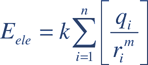
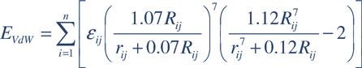
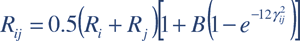
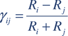
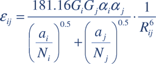

Home
An open-source software
aimed at high-throughput
chemometric analysis of molecular
interaction fields
Paolo Tosco,a, Thomas Balleb
a Department of Drug Science and
Technology,
University of Turin, via Pietro Giuria 9, 10125
Torino, Italy
b Faculty of Pharmacy, University
of Sydney,
Pharmacy Building (A15), Camperdown Campus, Sydney
NSW
Journal of Molecular Modeling 2011, 17, 201-208
doi
Contents
Description
Open3DQSAR
is an open-source tool aimed at pharmacophore exploration by
high-throughput chemometric analysis of molecular interaction
fields (MIFs). Open3DQSAR can generate steric potential,
electron density and MM/QM electrostatic potential fields;
furthermore, it can import GRIDKONT binary files produced by GRID,
CoMFA/CoMSIA fields (exported from SYBYL with the aid of a small SPL script),
and MOE grid
interaction fields (exported from and MOE with the aid of a small SVL script).
Subsequently, Open3DQSAR performs fast, automated PLS chemometric
analysis of MIFs allowing to quickly generate and challenge the
predictivity of many 3D-QSAR models using different training/test
set combinations, superposition schemes, variable selection and data
scrambling procedures, etc. High computational performance is attained
through implementation of parallelized algorithms for MIF generation,
PLS model building and validation, variable selection.
Open3DQSAR features:
- Multi-threaded computation
of MIFs (both MM and QM); support for the MMFF94 force-field
with automated assignment of atom types to the imported molecular
structures
- Comprehensive output, including SDF
molecular databases, 3D maps and many different plots to ease immediate
evaluation of results in PyMOL, MOE, Maestro, SYBYL and gnuplot
- Interface to COSMOsar3D
to compute local COSMO σ-profile (LSP)-based MIFs from
within Open3DQSAR
Open3DQSAR is controlled
through a command line interface; commands can be either entered
interactively from a command prompt or read from a batch script.
If PyMOL
is installed on the system while Open3DQSAR is being operated
interactively, the setup of 3D grid computations can be followed in real
time on PyMOL's viewport, allowing to tweak grid size and training/test
set composition very easily.
The main output is arranged as
human-readable plain ASCII text, while a number of additional files
are generated to store data and to export the results of computations
for further analysis and visualization with third party tools. In
particular, Open3DQSAR can export 3D maps for visualization in
PyMOL,
MOE, Maestro, SYBYL, and
can generate graphical statistic output ready to be imported into gnuplot.
Open3DQSAR is written in C; while pre-built binaries are available
for mainstream operating systems (Windows 32/64-bit, Linux 32/64-bit,
Solaris x86 32/64-bit, FreeBSD 32/64-bit, Intel Mac OS X 32/64-bit),
source code is portable and can be compiled under any *NIX platform
supporting POSIX threads. The modular nature of the code allows for
easy implementation of new features, so that the core application
can be customized to meet individual needs.
A detailed ChangeLog is kept to keep track of the additions and
modifications during Open3DQSAR's development.
Back to Contents
Workflow
Open3DQSAR's workflow
always begins importing a set of molecular structures with the respective
biological activities through the import type=SDF and
import type=DEPENDENT keywords. Afterwards, one may
calculate MIFs through the calc_field keyword, import
them from different sources through the import keyword,
or a combination of the two.
Once all MIFs have been gathered,
Open3DQSAR allows to include all of them or just a selection,
in order to evaluate their impact on the model. A choice of the
objects to be included in the model can also be made, especially
regarding the opportunity to include them in the training set or
in an external test set. The latter option will make possible to
accomplish external predictions once a model has been obtained.
Open3DQSAR can perform a variety of chemometric analyses on
imported MIFs, ranging from standard variable pretreatment to more
advanced variable selection procedures.
Available pretreatment
operations include:- zeroing (sets to zero grid values which
are close to zero)
- max/min cut-off (sets to
user-defined maximum/minimum threshold values the grid points lying
respectively above or below these boundaries)
-
exclusion of grid points which exceed the cutoff in a specific MIF
(e.g., allows to exclude from the chemometric analysis the grid
points which are very close to atom nuclei and therefore assume high
steric energy values)
- standard deviation cut-off
(removes variables having a standard deviation among different
objects lower than a user-defined threshold, in order to improve
the signal-to-noise ratio)
- N-level variable
elimination (removes variables assuming only a few different values
across the different objects to prevent them from biasing the
model)
- scaling operations (autoscaling, scaling of
a whole block of X or Y variables by a user-defined
coefficient, or according to the Block Unscaled Weighting procedure
[1]).
One should be aware
that pretreatment operations will impact on all objects included in the
training set; so, if a "true" test set which has never seen the model is
desired, objects should be moved to the training set at an early stage,
i.e. before any pretreatment operation is carried out apart from
zeroing or setting a cut-off value.
Subsequently, once an initial
PLS model has been obtained, one can challenge its predictive performance
against an external test set or by internal cross-validation, using the
leave-one-out, leave-two-out and leave-many-out paradigms. Furthermore,
the robustness of the model can be ascertained through the progressive
scrambling procedure previously described by Clark and Fox [2].
The predictive power of
a model can usually be improved by applying appropriate variable
selection procedures. A number of them have been implemented in
Open3DQSAR, namely:
- D-optimal design variable selection
[3, 4]
- Smart Region Definition (SRD), as previously described
by Pastor and co-workers [5]. SRD groups
variables on the basis of their original localization in three-dimensional
space; this procedure reduces redundancy arising from the existence
of multiple nearby descriptors which basically encode the same kind of
information
- Fractional factorial design (FFD) variable
selection, as originally described by Baroni et al. and implemented in
GOLPE [4, 6]. FFD
selection aims at selecting the variables which have the largest
effect on predictivity, and can operate on both single variables or
on groups identified by a previous SRD run
-
UVE-PLS variable selection as originally described by Centner and
co-workers [7], as well as the modified
iterative IVE-PLS methodology developed by Polanski and colleagues
[8]. These procedures remove the
least informative variables, i.e., those characterized by small
PLS pseudo-coefficients. The Open3DQSAR implementation of
UVE/IVE-PLS has been further augmented including the possibility to
use other cross-validation paradigms in addition to the leave-one-out
scheme originally proposed by Centner, as recently suggested by Grohmann
and Schindler [9]. Additionally, the
algorithms can operate on both single variables or SRD groups, just as for
FFD selection
Apart from potentially improving the predictivity
of a model, a very important consequence of variable selection is
a diminished complexity of the resulting PLS pseudo-coefficient
contour maps which significantly aids visual interpretation
of 3D-QSAR models.
REFERENCES
- Kastenholz, M. A.;
Pastor, M.; Cruciani, G.; Haaksma, E. E. J.; Fox,
T. J. Med. Chem. 2000, 43, 3033-3044. DOI
- Clark, R. D.; Fox, P. C.
J. Comput.-Aided Mol. Des. 2004, 18, 563-576.
DOI
- De Aguiar, P. F.; Bourguignon, B.;
Khots, M. S.; Massart, D. L.; Phan-Than-Luu R. Chemometrics
Intell. Lab. Syst. 1995, 30, 199-210.
DOI
- Baroni,
M.; Costantino, G.; Cruciani, G.; Riganelli, D.; Valigi, R.;
Clementi, S. Quant. Struct-Act. Relat. 1993, 12,
9-20. DOI
- Pastor,
M.; Cruciani, G.; Clementi, S. J. Med. Chem.
1997, 40, 1455-1464. DOI
- Baroni, M.; Clementi, S.; Cruciani, G.;
Costantino, G.; Riganelli, D. J. Chemometr. 1992, 6,
347-356. DOI
- Centner,
V.; Massart, D. L.; de Noord, O. E.; de Jong, S.; Vandeginste, B. M.;
Sterna, C. Anal. Chem. 1996, 68, 3851-3858.
DOI
- Gieleciak, R.; Polanski, J.
J. Chem. Inf. Model. 2007, 47, 547-556. DOI
- Grohmann, R.; Schindler, T.
J. Comput. Chem. 2008, 29, 847-860. DOI
Back to
Contents
Usage
open3dqsar [OPTION...]
-i
<filein>
Input is read from <filein>
-o
<fileout>
Output is written to <fileout>
-p
Input is piped through standard input
--term
default terminal colors are used; a new CMD window is
not spawned on start (Windows only)
--usage
Give a short usage message
-V,
--version Print program
version
Open3DQSAR can be operated both
interactively (i.e., entering commands from a shell-like prompt
supporting full command-line editing, TAB completion for filenames
and history) or by means of a script. The script can be either read
from a file (using the -i option) or from standard input
(-p option). By default, output is printed on standard
output; the -o option allows redirection to a file. If an
interactive session is running, output is also printed in the shell
window, no matter if the -o option is set or not.
The
behaviour of the command parser is a bit different according to the kind
of session which has been chosen through the command-line switches. If
input is being read from a file with the -i option, the
script is first checked for consistency in order to spot out syntax errors
at an early stage, i.e. before wasting time in computations which
will fail after a number of keywords. This check is not performed when
Open3DQSAR is run interactively (it would not make sense, since
commands are entered one by one). However, in this case, most errors
which would terminate a batch script do not cause Open3DQSAR
to quit, allowing the prosecution of the interactive session. Finally,
when command are piped through standard input, the consistency check is
not performed and all errors terminate the program. This latter operation
mode is intended for driving Open3DQSAR by piping commands from
an external program.
A simple double-click on the program icon
(Windows, Mac OS X) by default starts an interactive session with no
output redirection.
You are encouraged to subscribe to the Open3DQSAR
mailing list and to post your questions,
suggestions, bug reports etc. to the address open3dqsar-discuss@lists.sourceforge.net
Back to
Contents
Keywords
Open3DQSAR operations are controlled by a series of keywords,
and their relative options. The syntax is very simple; the following
example covers all possible cases:
keyword
parameter_1=string_or_numeric_value_1 \
parameter_2=numeric_value_1,numeric_value_2 \
parameter_3=numeric_value_1-numeric_value_n \
parameter_4=numeric_value_1,numeric_value_2-numeric_value_n,numeric_value_m
\
parameter_5=filename \
parameter_6="filename with spaces" \
parameter_7=filename\ with\ spaces
Keywords and parameters are separated by spaces or tabulations; no extra
spaces should be inserted (e.g., between parameter and values or
inside values) or error messages will be issued. Spaces can be inserted
in values (e.g., for filenames containing spaces) only if the whole
value is enclosed between quotes; alternatively, spaces can be preceded
by a backslash (see example above). Comments can be entered after the
# symbol. Line feeds separate one keyword from the one
which follows; as in the shell, one may divide parameters belonging to
a single keyword by line feeds to improve readability of the scripts
if a backslash is inserted before the line feed, as in the example
reported above.
Here follows an alphabetic list of all currently
available keywords with a brief explanation of their purpose. Clicking
on each keyword a more extended explanation will be provided along with
all relevant options, examples of use and, when appropriate, details
about the implementation and scientific background.
Back to
Contents
box
SYNOPSIS
box [mode={GET | SET; defaults to SET}] \
{[outgap=<number of Å by which the grid
box exceeds the largest molecule in all directions; defaults to
5.0>] \
[step=<grid step size
in Å; defaults to 1.0>] \
|
[x_start=<top left x coordinate> \
{x_end=<bottom right x coordinate> | x_nodes=<number
of nodes on the x coordinate>} \
y_start=<top left y coordinate> \
{y_end=<bottom right y coordinate> | y_nodes=<number
of nodes on the y coordinate>} \
z_start=<top left z coordinate> \
{z_end=<bottom right z coordinate> | z_nodes=<number of nodes
on the z coordinate>} \
| [file=<CoMFA
.rgn file>]}
DESCRIPTION
The box
keyword, whose default operation mode is SET,
allows specifying the position, size and mesh of the grid box which
surrounds the molecules belonging to the dataset. Before invoking
box, some 3D structures must have been imported through
the import type=SDF keyword. Invoking box
without parameters creates a 1.0 Å step size box surrounding all
molecules leaving a 5.0 Å outgap around the largest. Instead of
specifying the grid box size through the outgap parameter,
absolute x,y,z coordinates of the top left, bottom
right corners may be given; the actual position of the bottom right
corner will be adjusted to the nearest multiple of the grid step size.
As an alternative to [x,y,z]_end parameters, the number of
nodes on the x,y,z coordinates may be entered through the
[x,y,z]_nodes parameters.
A grid box consistent with
the one used in a CoMFA study may be created by importing a CoMFA region
.rgn file through the file parameter.
Finally, invoking box with mode=GET outputs
the current grid box settings.
EXAMPLES
#
the following command creates a 1.0 Å step size box surrounding
all molecules leaving a 5.0 Å outgap around the largest
box
# the following command creates a 0.3333 Å step
size box surrounding all molecules leaving a 4.0 Å outgap around
the largest
box step=0.3333 outgap=4.0
# the
following command creates a 1.0 Å step size box whose top left,
bottom right corners have the following coordinates: [(21.0, 30.0, 27.0),
(39.0, 46.0, 49.0)]
box x_start=21.0 x_end=39.0
y_start=30.0 y_end=46.0 z_start=27.0 z_end=49.0
# the following command creates a 1.5 Å step size box whose
top left corner has the following coordinates: (17.0, 21.0, 24.0);
the number of nodes in the x, y, z directions are respectively 15, 18,
19
box step=1.5 x_start=17.0 y_start=21.0
z_start=24.0 x_nodes=15 y_nodes=18 z_nodes=19
# the following command creates a grid consistent with the one used in
a CoMFA study
box file=comfa_study.rgn
Back to Contents
calc_field
SYNOPSIS
calc_field type={{MM_ELE [diel_dep={CONST | DIST; defaults
to CONST}] \
[diel_const=<dielectric
constant value; defaults to 1.0>] \
| VDW
[probe_type=<atom type of the probe; defaults to MMFF94 CR>]}
\
[smooth_probe={YES | NO; defaults to NO}]
| MD_GRID [probe_type=<GRID probe type; defaults
to C3>] \
[diel_const=<dielectric
constant value; defaults to 80.0>] \
[cutoff=<max energy cutoff value in kcal/mol; defaults to
5.0>] \
[md_grid_dir=<GRID I/O dir;
defaults to the directory from which structures were imported>]
\
| {{{QM_ELE | QM_DEN} [theory={HF | DFT;
defaults to HF]} \
[basis_set={STO-3G |
3-21G | 6-31G | 6-311G | SV | SVP | TZVP | EMSL_3-21G | EMSL_6-311G |
EMSL_6-311Gxx; defaults to 6-31G]} \
[spin={U | R; defaults to R}] \
[d_func=<number of d functions; defaults to 1>] \
[p_func=<number of p functions; defaults to
0>] \
[f_func=<number of f functions;
defaults to 0>] \
[diff_sp={YES
| NO; defaults to NO}]} \
| CS3D
[basis_set={SVP | TZVP; defaults to SVP]} \
[delsig=<σ-interval compression coefficient; defaults
to 6>] \
[compress={GZIP | ZIP | NONE;
defaults to GZIP}]} \
[qm_dir=<QM I/O dir;
defaults to the directory from which structures were imported>]
\
[qm_scratch=<QM scratch dir; defaults to the
temporary directory>]} \
DESCRIPTION
The calc_field keyword allows computing molecular interaction
fields. Open3DQSAR can calculate Van der Waals and electrostatic
fields according to classical molecular mechanics equations using the
Merck force field (type=VDW | MM_ELE). Additionally,
it can compute COSMOsar3D descriptors [1] if the CS3D program and TURBOMOLE are installed on the system.
It
can also drive Molecular Discovery GRID, if it is installed on the
system, to calculate MIFs based on GRID force field and probes. Finally,
it can compute electrostatic potential and electron density MIFs using
ab initio quantum mechanics (type=QM_ELE | QM_DEN).
By default, the calc_field module operates in parallel
fashion on multiprocessor machines, using all the CPUs available in
the system; if one wishes to run the computation on a lower number of
CPUs, this may be specified before calling calc_field with
the env n_cpus keyword.
MM force-field
based MIF computation
As far as molecular mechanics are
concerned (type={VDW | MM_ELE}), the Merck force field (MMFF94) is
used.
Electrostatic interactions are computed according to Coulomb's
law (Equation 1):

(1)
It is possible to specify the value of the dielectric
constant through the diel_const parameter (which
defaults to 1.0), and to choose whether to use a constant dielectric
(diel_dep=CONST, the default) or a distance-dependent
dielectric (diel_dep=DIST).
The expression
for Van der Waals in MMFF94 is described by Equation 2:

(2)
where Rij and εij
are defined as follows:



A probe is placed in each node of the currently loaded grid and
the Van der Waals (for type=VDW) or electrostatic
(for type=MM_ELE) interactions are computed between
the probe and each atom of the molecules belonging to the currently
loaded dataset. Appropriate atom types, charges and Van der Waals
parameters are automatically assigned according to the force-field
chosen through the force_field parameter by calling OpenBabel
utilities.
If the smooth_probe parameter is set to
YES, energy values are computed as the average of the energy
in the grid point and the energies in the eight vertexes of a box centred
on the grid point; the displacement of vertexes from the centre of the
box in each direction is equal to 1/3 of the grid's step size.
Here follows a list of the MMFF94 atom types which may be chosen as probe
atoms through the probe_type parameter; the default probe
is CR.
MMFF94 probe types
CR | Alkyl
carbon | O+ | Oxonium (tricoord) O |
C=C | Vinylic | HO+ | H
on oxonium oxygen |
C=O | General
carbonyl C | O=+ | Oxenium oxygen+ |
CSP | Acetylenic
C | HO=+ | H
on oxenium O+ |
HC | H-C | =N= | N twice double bonded |
OR | O-CSp3 | N+=C | Iminium nitrogen |
O=C | O=C,
generic | NCN+ | Q=1/2 |
NR | Amine
N | NGD+ |
Q=1/3 |
N=C | N=C, imines | CGD+ | Guanidinium
carbon |
NC=O | N-C=O, amides | NPD+ | N pyridinium
ion |
F | Fluorine | OFUR | Aromatic O,
furan |
CL | Chlorine | C% | Isonitrile
carbon |
BR | Bromine | NR% | Isonitrile
N |
I | Iodine | NM | Sulfonamide N- |
S | Thiol,
sulfide | C5A | Alpha arom 5-ring C |
S=C | S doubly
bonded to C | C5B | Beta arom 5-ring C |
S=O | Sulfoxide
S | N5A | Alpha arom 5-ring N |
SO2 | Sulfone
S | N5B | Alpha arom 5-ring N |
SI | Silicon | N2OX | Nitrogen in N-oxide |
CR4R | C in
cyclobutyl | N3OX | Nitrogen in N-oxide |
HOR | H-O,
alcohols | NPOX | Nitrogen in N-oxide |
CR3R | C in
cyclopropyl | OH2 | Oxygen in water |
HNR | H-N,
amines | HS | H-S |
HOCO | H-O,
acids | S2CM | Thiocarboxylate S |
PO4 | Phosphodiester | SO2M | Sulfur in sulfinate |
P | Tricoordinate
P | =S=O | Sulfinyl sulfur, C=S=O |
HN=C | Imine
N-H | -P=C | P doubly bonded to C |
HNCO | H-N,
amides | N5M | Neg N in tetrazole anion |
HOCC | H-O,
enols, phenols | CLO4 | Chlorine in ClO4(-) |
CE4R | C=C
in 4-ring | C5 | General arom 5-ring C |
HOH | H-OH | N5 | General arom 5-ring
N |
O2CM | O, Carboxylate anion | CIM+ | C in N-C-N, Im+
ion |
HOS | H-O-S, Sulf acids | NIM+ | N in N-C-N, Im+
ion |
NR+ | N+, Quaternary N | N5AX | 5-ring nitrogen in
N-oxide |
OM | Oxide oxygen on Sp3 C | FE+2 | Iron +2
cation |
HNR+ | H-N+ | FE+3 | Iron +3 cation |
CB | Aromatic
C | F- | Fluoride anion |
NPYD | Aromatic
N, pyridine | CL- | Chloride anion |
NPYL | Aromatic
N, pyrrole | BR- | Bromide anion |
NC=C | N-C=C
(deloc LP) | LI+ | Lithium cation |
CO2M | C in
CO2- anion | NA+ | Sodium cation |
NSP | N triple
bonded | K+ | Potassium cation |
NSO2 | N,
sulfonamides | ZN+2 | Dipositive zinc cation |
STHI | S in
thiophene | CA+2 | Dipositive calcium cation |
NO2 | Nitro
group N | CU+1 | Monopositive copper cation |
N=O | Nitroso
group N | CU+2 | Dipositive copper cation |
NAZT | Terminal
N, azide | MG+2 | Dipositive magnesium cation |
NSO | Dival. N
in S(N)(O) GP |
MIF
computation through COSMOsar3D
Open3DQSAR
allows computing MIFs using the COSMOsar3D program (type=cs3d),
which must be in the executable path; if this is not the case, the user
shall issue the command
env cs3d=/path/to/cs3d
or alternatively set the O3_CS3D
environment variable accordingly.
The user may decide
whether to let Open3DQSAR do the whole job (i.e.,
computing COSMO files via TURBOMOLE and then running COSMOsar3D),
or just running COSMOsar3D using pre-computed COSMO files.
In the latter case, the file parameter is a wildcard
pattern (e.g., /data/COSMO/*.cosmo, or
C:\data\ligands\adenosine_????.cosmo) pointing to a
series of COSMO files; there must be as many COSMO files as currently
loaded objects or an error message will be raised.
Instead, if the
user wishes to compute COSMO files as well, the ridft
program (part of the TURBOMOLE suite) must be in the executable path;
if this is not the case, the user shall issue the command
env qm_engine=/path/to/ridft
or alternatively
set the O3_QM_ENGINE environment variable accordingly.
By default, the SVP basis set will be used; alternatively the user may
choose the TZVP basis set with the basis_set parameter. TURBOMOLE
processes will be spawned in a multi-threaded fashion if
n_cpus > 1.
COSMOsar3D descriptors will be computed
using the same grid settings as currently defined in Open3DQSAR,
with a σ-interval compression coefficient of 6 (see COSMOsar3D
documentation and reference [1]). The
default value of 6 may be changed through the delsig
parameter.
QM ESP/DEN MIF computation
Ab initio quantum mechanics allow to compute electrostatic
potential or electron density MIFs. Open3DQSAR can automatically
compute such MIFs if appropriate QM software is installed on your
system; currently TURBOMOLE,
GAUSSIAN,
FIREFLY
and GAMESS-US are supported. Both FIREFLY
and GAMESS-US are available at no cost from the
respective websites upon registration. While FIREFLY is available
as closed-source binaries for Windows,
Linux and Mac OS X (choose the MPICH version), GAMESS-US is available as pre-built binaries for
Windows and Mac OS X, and can be easily built from source on both
Linux, Solaris and FreeBSD following the instructions. If you
use GAMESS-US, please make sure that you have
updated to the latest version, since older ones could not compute
cube files natively.
No matter which QM engine you will use, the
O3_QM_ENGINE environment variable needs to be set to the
full path to the executable (e.g., C:\g09\g09.exe on
Windows, /usr/local/firefly_71g_linux_mpich_p4/firefly
or /usr/local/gamess/gamess.##.x on Linux,
/Applications/Firefly/firefly.exe on Mac OS X, etc.);
alternatively you may use the env qm_engine keyword. If you
choose to use TURBOMOLE,
point the O3_QM_ENGINE environment
variable (or the qm_engine keyword) to the
full path to the dscf executable; e.g.
/software/theory/Turbomole/6.3/bin/em64t-unknown-linux-gnu/dscf
Once you have installed on your system a QM software supported
by Open3DQSAR, the latter will use it seamlessly, preparing
automatically the input files for the computations according to
the parameters specified on the calc_field command
line and spawning the processes in a multi-threaded fashion if
n_cpus > 1.
Alternatively, if you wish to
automatically prepare all the input files and then submit them
on a batch queueing system such as PBS, or just manually edit
some keywords before running the calculations, please refer to
the prepare keyword.
Here
follows a list of the parameters controlling QM calculations:
theory: the level of theory at which electrostatic
potential or electron density should be computed; defaults to HF. DFT uses
the B3LYP hybrid functional
basis_set:
the basis set which should be used for QM calculations; defaults
to 6-31G. Since some atoms are not included in standard basis sets
supplied with TURBOMOLE,
GAUSSIAN,
FIREFLY
and GAMESS-US (most notably, Br and I), three
basis sets from the EMSL Basis Set Exchange web portal can be used
within Open3DQSAR selecting the EMSL_3-21G,
EMSL_6-311G and EMSL_6-311Gxx keywords
respectively; if these basis sets are used, or if you are using one
of the TURBOMOLE basis sets
such as SV, SVP or TZVP,
d_func, p_func, f_func,
diff_sp parameters are ignored, since the type and
the number of Gaussian functions is already defined in the basis
set itself
spin: determines whether a
spin-restricted (R) or a spin-unrestricted (U)
calculation will be carried out; defaults to R
d_func: determines the number of d functions
which will be used; defaults to 1
p_func:
determines the number of p functions which will be used; defaults
to 0
f_func: determines the number
of f functions which will be used; defaults to 0
diff_sp: determines whether diffuse sp
functions will be added (YES) or not (NO, the
default)
qm_dir: allows to choose the
directory where input/output/log files regarding the QM computations
will be placed; by default a directory with a random name is created
in the same folder from which the structures were imported with
the import type=SDF keyword, or an Open3DQSAR
DAT file was loaded with the load
keyword
qm_scratch: allows to choose
the scratch directory where temporary files used by the QM software
will be placed. All QM packages require that this folder be on a local
hard disk for best performance rather than on a NFS or Samba share; by
default Open3DQSAR creates a scratch folder in the temporary folder
chosen with the environment variable O3_TEMP_DIR or the
env temp_dir keyword
MIF computation
through Molecular Discovery GRID
Open3DQSAR allows
computing MIFs using Molecular Discovery GRID program. The advantage with
respect to previous versions is that there is no need to perform the
computation externally using the GREATER interface for GRID force-field
atom typing, and to import at a later time the MIFs as a GRIDKONT binary
file. Open3DQSAR can take care of GRID force-field atom typing
automatically, allowing not to break a batch model building workflow.
It is possible to specify the value of the dielectric constant through the
diel_const parameter (which defaults to 80.0 as in GREATER),
and to choose the upper energy cutoff (which defaults to 5.0
kcal/mol as in GREATER). Any of the GRID probe types can be specified by
the probe_type parameter; available probe types are listed
below:
Molecular Discovery GRID probe types
C3 | Methyl
CH3 group | F- | Fluoride anion |
C1= | sp2 CH
aromatic or vinyl | CL | Organic chlorine atom |
N:# | sp N with
lone pair | CL- | Chloride anion |
N:= | sp2 N
with lone pair | BR | Organic bromine atom |
N: | sp3 N with
lone pair | BR- | Bromide anion |
N-: | Anionic
tetrazole N | I | Organic iodine atom |
N1 | Neutral flat
NH eg amide | I- | Iodide anion |
N1+ | sp3 amine
NH cation | LI+ | Lithium cation |
N1= | sp2 Amine
NH cation | NA+ | Sodium cation |
N1: | sp3 NH
with lone pair | K+ | Potassium cation |
NH= | sp2 NH with
lone pair | RB+ | Rubidium cation |
N1# | sp NH with
one hydrogen | CS+ | Caesium cation |
N2 | Neutral flat
NH2 eg amide | MG+2 | Magnesium cation |
N2+ | sp3 amine
NH2 cation | CA+2 | Calcium cation |
N2= | sp2 Amine
NH2 cation | SR+2 | Strontium cation |
N2: | sp3 NH2 with
lone pair | ZN+2 | Zinc cation |
N3+ | sp3 amine
NH3 cation | CU+2 | Cupric copper cation |
NM3 | trimethyl-ammonium
cation | FE+2 | Ferrous iron cation |
O1 | Alkyl hydroxy
OH group | FE+3 | Ferric iron cation |
OH | Phenol or
carboxy OH | BOTH | The Amphipatic Probe |
O- | sp2
phenolate oxygen | DRY | The Hydrophobic Probe |
O | sp2 carbonyl
oxygen | COO- | Aliphatic anionic carboxy group |
O:: | sp2 carboxy
oxygen atom | AR.COO- | Aromatic anionic carboxy group |
O= | O of
sulphate/sulphonamide | CONH2 | Aliphatic neutral amide group |
OES | sp3 ester
oxygen atom | AR.CONH2 | Aromatic neutral amide group |
OC2 | Ether or
furan oxygen | CONHR_CIS | Aliphatic neutral amide group (cis) |
OS | O of sulphone
/ sulphoxide | CONHR_TRANS | Aliphatic neutral amide group
(trans) |
ON | Oxygen of nitro group | AR.CONHR_CIS | Aromatic
neutral amide group (cis) |
OH2 | Water | AR.CONHR_TRANS | Aromatic
neutral amide group (trans) |
PO4 | PO4 phosphate
dianion | AMIDINE | Aliphatic cationic amidine group |
PO4H | PO4H
phosphate anion | AR.AMIDINE | Aromatic cationic amidine group |
S1 | Neutral
SH group | M-DIAMINE | Meta-diamino-benzene |
F | Organic fluorine
atom |
REFERENCES
- Klamt, A.; Thormann, M.; Wichmann,
K.; Tosco, P. J. Chem. Inf. Model. 2012. DOI
EXAMPLES
# the following command computes
a Van der Waals field using the MMFF94 force-field and the default probe
(atom type 1)
calc_field type=VDW
# the following
commands allow to compute a QM electrostatic field using the FIREFLY QM
engine using a DFT/RB3LYP level of theory, with a 6-31G(d) basis_set
env qm_engine=/software/firefly_71g_linux_mpich_p4/firefly
calc_field type=QM_ELE theory=DFT basis_set=6-31G
d_func=1
Back
to Contents
chdir
SYNOPSIS
chdir | cd [dir=<destination
directory>]
DESCRIPTION
The chdir
keyword, together with its synonym cd, allows to change
the current working directory. Calling chdir without
arguments simply prints the current working directory.
EXAMPLES
# the following command prints the current
working directory
cd
# the following command changes
the current directory to C:/Users/ptosco/open3dqsar_models
chdir dir=C:/Users/ptosco/open3dqsar_models
Back to Contents
cutoff
SYNOPSIS
cutoff
type={MIN | MAX} \
level=<cutoff
level> \
[smooth=<NONE |
QUADRATIC; defaults to NONE>] \
[field_list=<comma/hyphen separated list | ALL; defaults to ALL>]
DESCRIPTION
The cutoff keyword is
used to set a threshold value which variables cannot exceed. Variables
belonging to fields specified in field_list which
have values above (if type=MAX) or below (if
type=MIN) the threshold are forced to assume the
threshold value. Its purpose is avoiding that a few high values
in the dataset may severely bias the model. For example, the GRID
program by default sets a threshold value of 5.0 kcal/mol for
field energies, while in CoMFA by default energies are limited to
30.0 kcal/mol. If a QM software is used to compute, e.g.,
electrostatic potential (ESP) fields, a threshold should be set
as well, or grid nodes near the nuclei where the ESP assumes high
positive values will dominate the PLS model. If a somewhat smoother
cutoff paradigm is desired, the smooth parameter may
be set to QUADRATIC; in this case energy values will be
treated as follows [1]:
let J
= 1.2 * level
let K = 0.8 * level
Energy values greater than J in absolute value will be set
to level just as with smooth=NONE. On the
contrary, energy values whose absolute value lies in a range between
0.8 * level and 1.2 * level assume the
value determined by the following quadratic function:
Xcutoff = 1 / (2 * (K - J)) * (X2 - 2 * J *
X + K2)
where X are the original
energy values and Xcutoff are the energy values
after the cutoff procedure has taken place.
EXAMPLE
# the following command sets a MAX cutoff of 10.0 kcal/mol on
grid values belonging to field 1, so that all values exceeding 10.0
kcal/mol will be set to 10.0 kcal/mol
cutoff field_list=1
type=MAX level=10.0
# the following command sets a MIN
cutoff of -30.0 kcal/mol and a MAX cutoff of 30.0 kcal/mol on grid values
belonging to field 2, using a quadratic smoothing of the cutoff
cutoff field_list=2 type=MIN level=-30.0
smooth=QUADRATIC
cutoff field_list=2 type=MAX
level=30.0 smooth=QUADRATIC
REFERENCES
- Cramer, R. D., III; DePriest, S. A.;
Patterson, D. E.; Hecht, P. In 3D QSAR in drug design: theory,
methods and applications; Kubinyi, H., Ed. 1993, ESCOM Science
Pub., Leiden, pp 456-457
Back to Contents
cv
SYNOPSIS
cv [type={LOO | LTO | LMO}; defaults to
LOO] \
[runs=<number of runs; defaults
to 20>] \
[groups=number of groups;
defaults to 5]} \
[pc=<number of PCs,
defaults to the number of PCs of the current PLS model>]
\
[file=<filename.sdf where results will
be saved in SDF format>]
DESCRIPTION
The
cv keyword is used to perform a cross-validation run once
a PLS model has been obtained. The type keyword allows to
choose the cross-validation scheme (LOO, leave-one-out;
LTO, leave-two-out; LMO, leave-many-out). In
the case of LMO cross-validation it is possible to define
the number of runs to be carried out as well as the number of groups in
which the dataset will be split for cross-validation (e.g., 10
groups corresponds to leave-10%-out, 5 groups to leave-20%-out, etc.).
The pc keyword allows to select the number of PCs which
will be used during cross-validation; by default, the same number of
principal components extracted when the PLS model was built is used, but a
lower number may be chosen as well; an error message will be issued if a
larger number of PCs with respect to the current PLS model is chosen. CV
statistics (SDEP, q2) together with predicted values
as a function of the number of PCs are printed on the main output,
and can subsequently be plotted through the plot
command. Additionally, if the file parameter is specified,
a file with the predicted values is generated in SDF format, ready
to be imported in a molecular modeling software. By default, the
cv module operates in parallel fashion on multiprocessor
machines, using all the CPU cores available in the system; this may be
specified before calling cv with the env n_cpus
keyword.
EXAMPLES
# the following command
performs a leave-one-out cross-validation run extracting 5 principal
components using the number of CPUs previously set with env n_cpus
cv pc=5 type=LOO
# the following command performs
a leave-two-out cross-validation run extracting 5 principal components
using 2 CPU cores, saving results in the file results.sdf
env
n_cpus=2
cv pc=5 type=LTO file=results.sdf
# the following command performs a leave-many-out cross-validation
run extracting 3 principal components, after splitting the dataset
into 4 groups. 50 runs will be carried out, each with a different
random group composition; 4 CPU cores will be used
env
n_cpus=4
cv pc=3 type=LMO groups=4 runs=50
Back to
Contents
dataset
SYNOPSIS
dataset
DESCRIPTION
The dataset
keyword (no arguments) prints a summary of the properties of the
currently loaded dataset, namely active fields, objects, variables,
etc.
Back to
Contents
d_optimal
SYNOPSIS
d_optimal [pc=<number of PCs;
defaults to the number of PCs of the current PLS model>]
\
[{percent_remove=<1-90; defaults to
50> \
| design_points=<0.1 * number
of variables - (number of variables - 1); \
defaults to 0.5 * number of variables>}] \
[type={WEIGHTS | LOADINGS; defaults to WEIGHTS}]
DESCRIPTION
The d_optimal keyword is used
to carry out a variable selection according to D-optimal design,
i.e. to select an ensemble of variables (whose size is defined
by the user) such as to minimize the determinant of the dispersion
matrix. The D-optimal algorithm can operate in either the space
of PLS partial weights (type=WEIGHTS) or PLS loadings
(type=LOADINGS). An excellent tutorial to D-optimal design
has been written by De Aguiar et al. [1], while
to review its application in the 3D-QSAR field one may refer to the work
by Baroni et al. [2]. In Open3DQSAR's
implementation the D-optimal design is obtained by means of a
k-exchange algorithm [3]. The user has two
choices to specify the extent to which the variable selection should be
carried out: one is supplying the percent_remove option with
the percent of variables which should be eliminated as a parameter. The
other is supplying the exact number of variables which should be
retained as a parameter to the option design_points. In
both cases one is not allowed to remove more than 90% of the original
variables.
EXAMPLES
# the following command
performs a D-optimal variable selection operating in the space of PLS
partial weights, taking into account the first 3 principal components,
with the aim of removing 40% of the original variables
d_optimal
type=WEIGHTS pc=3 percent_remove=40
# the following
command performs a D-optimal variable selection operating in the space
of PLS loadings, taking into account the same number of principal
components extracted when the PLS model was built, with the aim of
retaining 1500 variables
d_optimal type=LOADINGS
design_points=1500
REFERENCES
- De Aguiar, P. F.; Bourguignon, B.;
Khots, M. S.; Massart, D. L.; Phan-Than-Luu R. Chemometrics
Intell. Lab. Syst. 1995, 30, 199-210.
DOI
- Baroni, M.;
Costantino, G.; Cruciani, G.; Riganelli, D.; Valigi, R.; Clementi, S.
Quant. Struct-Act. Relat. 1993, 12, 9-20.
DOI
- Johnson, M. E.;
Nachtsheim, C. J. Technometrics 1983, 25,
271-277. Stable URL
Back to Contents
env
SYNOPSIS
env variable=<value>
DESCRIPTION
The env keyword is used to
assign/change the value of certain internal variables relevant
to Open3DQSAR. Currently, the following variables
may be affected by the env keyword:
random_seed=<unsigned long int>
initializes the random seed used for all operations involving randomness,
e.g. leave-many-out cross-validation, to a value different
from the default one, defined in grd.h. The value of
the random seed may also be set before starting Open3DQSAR by
setting the environment variable O3_RANDOM_SEED
temp_dir=<path/to/temporary/folder>
sets a different directory from the default, OS-specific one
(e.g., /tmp under Linux, /var/tmp
under Solaris/FreeBSD/Mac OS X, etc.), for temporary files. The
temporary folder may also be set before starting Open3DQSAR by
setting the environment variable O3_TEMP_DIR
nice=<OS-specific value>
sets
the nice value, that is the priority under which
Open3DQSAR computation will be run. The value of this
variable is OS-specific, namely:
- under Linux,
Solaris, FreeBSD, Mac OS X the value of
nice may
range from -20 to 20, just as for the equivalent shell command
nice. By default Open3DQSAR runs at the
lowest priority (20)
- under Windows the
value of
nice may assume the following values (see SetPriority for further details):
ABOVE_NORMALBELOW_NORMALHIGHIDLENORMALREALTIME
By default, Open3DQSAR runs at the lowest priority, that is
BELOW_NORMAL
n_cpus=<number
of CPUs which will be used by parallel algorithms; defaults to the
number of available physical CPUs>
allows to set the
number of CPUs which will be used by parallel algorithms (i.e.,
calc_field, cv, ffdsel
and uvepls). Open3DQSAR is able to detect the
correct number of available CPUs on Windows, Linux, Solaris, FreeBSD
and Mac OS X systems. On these platforms, Open3DQSAR will run
by default on all available physical CPUs; a lower number of CPUs may
be specified if one plans to use some of the CPU cores to carry out
other tasks on the same machine. On the aforementioned platforms,
Open3DQSAR will refuse to use more CPUs than the physical ones,
since this would negatively impact on performance. However, should
ever Open3DQSAR be built and executed on platforms where the
number of physical CPUs cannot be obtained, the number of CPUs used
by Open3DQSAR shall be set by the user, paying attention not
to exceed the number of physical CPUs, since this would negatively
impact on performance. The n_cpus can be adjusted before
running Open3DQSAR setting the O3_N_CPUS environment
variable appropriately.
babel_path=<directory
where OpenBabel binaries are installed>
allows to set
the path to OpenBabel binaries used by Open3DQSAR to assign
atom types/charges and interconvert file formats. Alternatively,
the O3_BABEL_PATH environment variable may be defined
before running Open3DQSAR
cs3d=<full
path to the cs3d executable>
allows to set the path to
the cs3d binary used by Open3DQSAR to compute COSMOsar3D
MIFs. Alternatively, the O3_CS3D environment
variable may be defined before running Open3DQSAR
md_grid_path=<directory where Molecular Discovery
GRID binaries are installed>
allows to set the path to Molecular
Discovery GRID binaries called by Open3DQSAR to compute GRID MIFs
through the calc_field type=md_grid keyword. Alternatively,
the O3_MD_GRID_PATH environment variable may be defined
before running Open3DQSAR
qm_engine=<full
path to the QM software executable>
allows to specify
whether TURBOMOLE, GAUSSIAN, FIREFLY
or GAMESS-US will be used, as well as the full
path to the main executable (dscf, g03,
g09, firefly or gamess.##.x,
respectively). Alternatively, the O3_QM_ENGINE environment
variable may be defined before running Open3DQSAR
pymol=<full path to the PyMOL executable>
allows to set the path to PyMOL for real time visualization of the
dataset, grid box, etc. Alternatively, the O3_PYMOL
environment variable may be defined before running
Open3DQSAR
gnuplot=<full path
to the gnuplot executable>
allows to set the path
to gnuplot for real time generation of plots. Alternatively, the
O3_GNUPLOT environment variable may be defined before
running Open3DQSAR
There is an additional
environment variable, O3_SAVE_RAM, which may be set
to <YES | NO> only before starting
Open3DQSAR. This variable impacts on the way Open3DQSAR
manages available physical RAM. As a default, O3_SAVE_RAM=NO,
which means that all MIFs are stored into physical RAM for maximum
performance. However, when dealing with large grids and several fields,
if your RAM availability is limited (< 1 GB), it may be necessary to
store MIFs on page files on the hard disk, which reduces computational
speed but is way less demanding in terms of memory requirements.
EXAMPLES
# the following command sets the nice value to 10
(Linux, Solaris, FreeBSD, Mac OS X)
env nice=10
# the
following command sets the nice value to NORMAL (Windows)
env
nice=NORMAL
# the following command sets the PyMOL path on
Windows
env pymol="C:\Program Files\PyMOL\pymol.bat"
# the following command sets the FIREFLY path on Linux
env
qm_engine=/software/firefly_71g_linux_mpich_p4/firefly
# the
following invokes Open3DQSAR after setting the O3_RANDOM_SEED environment
variable (csh):
ptosco@dLinux ~$ setenv O3_RANDOM_SEED
674567364
ptosco@dLinux ~$ open3dqsar -i input_script.inp
-o output_script.out
# the following invokes Open3DQSAR
after setting the O3_SAVE_RAM environment variable to YES (bash):
ptosco@dLinux ~$ export O3_SAVE_RAM=YES
ptosco@dLinux ~$
open3dqsar -i input_script.inp -o output_script.out
# the following invokes Open3DQSAR after setting the O3_RANDOM_SEED
environment variable (Windows CMD):
C:\Users\ptosco> set
O3_RANDOM_SEED=674567364
C:\Users\ptosco> open3dqsar
-i input_script.inp -o output_script.out
Back to Contents
exclude
SYNOPSIS
exclude
type={ANY | MATCH; defaults to MATCH} \
ref_field=<field number> \
[field_list=<comma/hyphen separated list | ALL; defaults to
ALL>]
DESCRIPTION
The exclude
keyword is used to remove from the analysis those grid points which exceed
the min/max cutoff values specified through the cutoff
keyword in the reference field indicated by the ref_field
parameter. Grid points are zeroed in all fields specified in
field_list, except the reference field even if it was
included in the list. If type=MATCH, the cutoff check is made
only between matching objects. If, instead, type=ANY, then
grid points are eliminated if they exceed cutoff in any of the objects
of the reference field. Please note that only TRAININGSET
objects are taken into consideration. The exclude keyword
may be especially useful to neglect from a QM or MM ESP field those
points which exceed cutoff in a VdW or anyway mostly sterical field,
i.e. the points which are closest to nuclei and which therefore
assume extreme values in the ESP field.
EXAMPLES
# the following command excludes from the chemometric analysis the
points of field 2 which exceed cutoff in matching objects of field 1
exclude type=MATCH ref_field=1 field_list=2
# the following command excludes from the chemometric analysis the
points of all fields but 1 which exceed cutoff in any TRAININGSET object
belonging to field 1
exclude type=ANY ref_field=1
Back to
Contents
export
SYNOPSIS
export type={WEIGHTS [pc=<number of PCs, defaults to the
number of PCs of the current PLS model>] \
| LOADINGS [pc=<number of PCs, defaults to the number of PCs of the
current PLS model>] \
| PCA_LOADINGS
[pc=<number of PCs, defaults to the number of PCs of the current PCA
analysis] \
| COEFFICIENTS [pc=<number
of PCs, defaults to the number of PCs of the current PLS model]
\
| MEAN_X_COEFFICIENTS [pc=<number of
PCs, defaults to the number of PCs of the current PLS model]
\
| SD_X_COEFFICIENTS [pc=<number of PCs,
defaults to the number of PCs of the current PLS model] \
[y_var_list=<comma/hyphen separated list | ALL;
defaults to ALL>] \
| 2_LEVEL | 3_LEVEL |
4_LEVEL | D_OPTIMAL | FFDSEL | UVEPLS | SRD \
| FIELD_SD [object_list | id_list=<comma/hyphen separated list |
ALL; defaults to ALL>] \
| OBJECT_FIELD
[object_list | id_list=<comma/hyphen separated list | ALL; defaults
to ALL>] \
[inactive={ORIGINAL | ZERO |
LABEL}; defaults to ORIGINAL] \
[missing={ZERO | LABEL}; defaults to ZERO]} \
file=<file basename without extension>
\
[field_list=<comma/hyphen separated
list | ALL; defaults to ALL>] \
[endianness={LITTLE_ENDIAN | BIG_ENDIAN | NATIVE; defaults to
NATIVE}] \
[format={INSIGHT | MAESTRO | MOE
| SYBYL | FORMATTED_CUBE | UNFORMATTED_CUBE | ASCII | XYZ; defaults to
INSIGHT}] \
[sign={POS | NEG | BOTH, defaults
to BOTH]] \
[interpolate=<0-5, defaults
to 0>]
DESCRIPTION
The export
keyword is used to export a 3D grid of values in several formats for
visualization by means of a molecular modelling package. Currently,
five formats are supported, which allow respectively visualization in
PyMOL/Insight II (INSIGHT), Maestro (MAESTRO),
MOE (MOE), SYBYL (SYBYL), JMol or Gabedit
(FORMATTED_CUBE). Additionally, grid data can be exported in
ASCII or XYZ formats, which are intended for
exporting grid data as a human-readable text file; the XYZ
format includes the indication of the Cartesian coordinates of the grid
point each energy value refers to. Finally, CUBE files may
also be exported in binary form (UNFORMATTED_CUBE).
The
values which may be exported, defined by the parameter type,
are:
WEIGHTS: the PLS partial weights
of the component specified through the pc parameter;
by default, the highest component extracted by the PLS algorithm is
used
LOADINGS: the PLS loadings of the
component specified through the pc parameter; by default,
the highest component extracted by the PLS algorithm is used
PCA_LOADINGS: the PCA loadings of the component
specified through the pc parameter; by default, the
highest component extracted by the PCA algorithm is used
COEFFICIENTS: the PLS pseudo-coefficients of
the model built out of pc principal components are
plotted. Since the pseudo-coefficients are linked to a specific
dependent variable, if multiple dependent variables are present,
specific y's may be indicated through the y_var_list
parameter; by default a grid plot will be generated for each dependent
variable
MEAN_X_COEFFICIENTS: as for
COEFFICIENTS, but in this case PLS pseudo-coefficients
of the model are multiplied by the mean value of the variable across
the dataset.
SD_X_COEFFICIENTS: as for
COEFFICIENTS, but in this case PLS pseudo-coefficients
of the model are multiplied by the standard deviation of the variable
across the dataset.
2_LEVEL: in the
grid plot, a 1 value will be plotted in correspondence of the 2-level
X variables, while all other variables will bear a 0 value
3_LEVEL: in the grid plot, a 1 value will be plotted
in correspondence of the 3-level X variables, while all other variables
will bear a 0 value
4_LEVEL: in the
grid plot, a 1 value will be plotted in correspondence of the 4-level
X variables, while all other variables will bear a 0 value
D_OPTIMAL: in the grid plot, a 1 value will be
plotted in correspondence of the X variables selected by a previous
D-optimal variable selection, while all other variables will bear a
0 value
FFDSEL: in the grid plot, a 1
value will be plotted in correspondence of the X variables selected by
a previous FFD variable selection, while all other variables will bear
a 0 value
UVEPLS: in the grid plot, a 1
value will be plotted in correspondence of the X variables selected by
a previous UVE-PLS variable selection, while all other variables will
bear a 0 value
SRD: in the grid plot,
an integer value corresponding to the group number (except for the
variables belonging to group zero, which will be characterized by a -1
value) will be plotted in correspondence of the X variables belonging to
the groups listed in the group_list, as a consequence of a
previous SRD procedure; all other variables will bear a 0 value
FIELD_SD: at each grid point, the standard deviation
among the values assumed by objects specified in object_list
or in id_list (which defaults to all active objects in
the dataset) is plotted
OBJECT_FIELD:
at each grid point, the energy value assumed by objects specified in
object_list or in id_list (which defaults
to all active objects in the dataset) is plotted; a separate
grid file is produced for each of the objects. According to the
setting of the inactive parameter one may choose to
plot the actual energy value also in the case of inactive variables
(inactive=ORIGINAL, the default), to plot a zero energy value
for inactive variables (inactive=ZERO, the default), or to
plot a special label value (INACTIVE in ASCII
and XYZ formats, -1.0e37 in binary formats).
The missing parameter instead regulates the
behaviour in case of missing values; by default they are
replaced by zeros (missing=ZERO), while setting
missing=LABEL causes a special label to be plotted
(MISSING in ASCII and XYZ
formats, 1.0e37 in binary formats).
The
keyword file allows to set a basename for all files
which will be generated by the export command. The
export command also has a number of optional
parameters listed below:
field_list:
a list of fields on which export should operate may
be defined; as a default, all active fields will be taken into
consideration
endianness: allows
to specify the endianness of the binary grid files which will be
generated; defaults to the native endianness of the machine on which
Open3DQSAR is running
format:
allows to specify the format of the grid file(s) which will be generated;
defaults to INSIGHT
sign:
by default, both positive and negative values will be written in
the grid file(s); if sign=POS or sign=NEG,
respectively negative and positive values will be set to zero, and
only positive or negative values will be actually written to the
grid file(s)
interpolate: defaults
to zero; if greater than zero, tricubic interpolation over the
specified number of points is carried out, with the aim of obtaining
smoother contours for visualization or printing.
EXAMPLES
# this command invokes the export command
to export PLS pseudo-coefficients of the first two fields, based on
a 3-principal component PLS model. The INSIGHT format is used
export pc=3 type=COEFFICIENTS format=INSIGHT
field_list=1,2 file=coefficients_3-pc_model
# this
command invokes the export command to export PLS pseudo-coefficients
of the first field, based on a 5-principal component PLS model. Two
dependent variables were present, but only the coefficients
referring to the first variable are plotted for visualization in
Maestro. Positive and negative values are saved into separate files,
in order to allow plotting positive and negative values at different
isocontour levels
export pc=5 type=COEFFICIENTS
format=MAESTRO field_list=1 y_var_list=1
sign=POS file=coefficients_5-pc_model_pos
export
pc=5 type=COEFFICIENTS format=MAESTRO field_list=1
y_var_list=1 sign=NEG file=coefficients_5-pc_model_neg
# this command invokes the export command to export field values for
fields 1,3 referring to objects 1-4 for visualization in MOE. To obtain
smoother contours, 3 interpolated planes are added between two calculated
grid planes
export type=OBJECT_FIELD format=MOE
object_list=1-4 field_list=1,3 file=field_values
interpolate=3
# this command invokes the export command to
export the composition of SRD group zero; i.e., it is possible to
visualize which variables form SRD group zero and where they are located
in 3D space. SYBYL format is used
export type=SRD
format=SYBYL group_list=0 file=srd_group_zero
Back to
Contents
ffdsel
SYNOPSIS
ffdsel [type={LOO | LTO | LMO}; defaults to LOO] \
[runs=<number of runs; defaults to 20>]
\
[groups=<number of groups; defaults to
5] | EXTERNAL} \
[pc=<number of PCs;
defaults to the number of PCs of the current PLS model>]
\
[percent_dummies=<0-50; defaults to
20>] \
[use_srd_groups={YES | NO;
defaults to NO}] \
[retain_uncertain={YES
| NO; defaults to YES}] \
[fold_over={YES | NO; defaults to NO}] \
[combination_variable_ratio=<1.0-10.0; defaults to 2.0>]
\
[confidence_level=<80.0-99.0; defaults
to 99.0>] \
[print_sdep={YES | NO;
defaults to NO} \
[print_effect={YES
| NO; defaults to NO}]
DESCRIPTION
The
ffdsel keyword is used to carry out a variable selection
according to Fractional Factorial Design (FFD), as implemented in GOLPE [2, 4]. The rationale
of this procedure is to select a subset of variables whose impact
on cross-validated q2 is favorable. The user
has control on a number of parameters, first of all the number of
pc and the type of cross-validation which
will be used in the variable selection procedure. In Open3DQSAR
an additional possibility has been implemented, that is using external
validation as an alternative to internal cross-validation to carry
out the variable selection (type=external). Setting
type=external, the subset of variables having the most
favorable impact on the SDEP of an external test set is selected
by the FFD procedure. All of the parameters controlling the FFD
variable selection are those defined by Baroni et al. in their
original implementation:percent_dummies:
percentage of dummy variables which should be included in the FFD
matrix
use_srd_groups: a flag which
specifies whether single variables will be included in the models
or, instead, the groups of variables identified by a SRD procedure
carried out previously
retain_uncertain:
a flag which specifies whether variables having an uncertain effect
on predictivity at the chosen confidence level should be retained or
excluded from the model
fold_over: a flag
which specifies whether a fold-over type of FFD should be used (refer
to [2] or [5] for
further details)
combination_variable_ratio:
this parameter controls how many models will be built using different
combinations of variables; in particular, the total number of PLS models
is equal to the power of two nearest to the number of active variables
(or active SRD groups, if the use_srd_groups flag was set)
times the combination_variable_ratio coefficient. Of
course, the higher the number of tested models, the most accurate
will be the choice of the subset of variables achieving the best
predictive performance
confidence_level:
the confidence level used in considering a variable as favorable,
detrimental or uncertain with respect to the predictive power of
the model
print_sdep: a flag to
toggle verbose output of the SDEP values of all the individual
models
print_effect: a flag to toggle
verbose output of the effects, computed by the Yates algorithm, of each
active variable
By default, the ffdsel module
operates in parallel fashion on multiprocessor machines, using all the
CPUs available in the system; if one wishes to run the computation on
a smaller number of CPUs, this may be specified with the env
n_cpus keyword before calling ffdsel.
EXAMPLES
# this command invokes FFD selection using LOO
cross-validation, extracting 3 principal components. 20% Dummy variables
are included in the FFD matrix and a 2.0 combination/variable ratio is
used; this means that if the model has 2560 active variables, 2.0 * 4096 =
8192 models will be evaluated. The number of CPU cores previously set by
the env n_cpus keyword is used.
ffdsel pc=3 type=LOO
percent_dummies=20 combination_variable_ratio=2.0
# this
command invokes FFD selection using LMO cross-validation (5 groups,
100 runs), extracting 5 principal components. 20% Dummy variables
are included in the FFD matrix and a 1.0 combination/variable ratio
is used. SRD groups previously computed will be taken into account
instead of single variables. 2 CPU cores are used.
env
n_cpus=2
ffdsel pc=5 type=LMO groups=5
runs=100 \
percent_dummies=20
combination_variable_ratio=1.0 \
use_srd_groups=yes
# this command invokes FFD selection
using LMO cross-validation (4 groups, 50 runs), extracting 5 principal
components. 10% Dummy variables are included in the FFD matrix and a 2.0
combination/variable ratio is used. SRD groups previously computed will
be taken into account instead of single variables. Fold-over design is
chosen and uncertain variables are removed. Full details about SDEPs
and effects of individual models are printed to the main output. 4
CPU cores are used.
env n_cpus=4
ffdsel pc=5
type=LMO groups=4 runs=50 \
percent_dummies=10 combination_variable_ratio=2.0
use_srd_groups=yes \
fold_over=yes
print_sdep=yes print_effect=yes
REFERENCES
- De Aguiar,
P. F.; Bourguignon, B.; Khots, M. S.; Massart, D. L.; Phan-Than-Luu R.
Chemometrics Intell. Lab. Syst. 1995, 30, 199-210.
DOI
- Baroni, M.;
Costantino, G.; Cruciani, G.; Riganelli, D.; Valigi, R.; Clementi, S.
Quant. Struct-Act. Relat. 1993, 12, 9-20.
DOI
- Johnson,
M. E.; Nachtsheim, C. J. Technometrics 1983, 25,
271-277. Stable URL
- Baroni,
M.; Clementi, S.; Cruciani, G.; Costantino, G.; Riganelli,
D. J. Chemometr. 1992, 6, 347-356.
DOI
- Box,
G. E. P.; Hunter, J. S.; Hunter, W. G. Statistics for
Experimenters: Design, Innovation, and Discovery, 2nd ed.
2005, Wiley-VCH, Weinheim.
Back to Contents
import
SYNOPSIS
import type={SDF <file=SDF filename> \
[y_var_name=<comma separated list |
ALL>] \
| GRIDKONT [file=<.kont
filename; defaults to grid.kont>] \
[replace_object_name={YES | NO; defaults to YES}] \
| MOE_GRID file=<file basename with
regex> \
| MOLDEN file=<file
basename with regex> \
| FORMATTED_CUBE
file=<file basename with regex> [mo=<index number
of MO to be imported | ALL; defaults to ALL>] \
| UNFORMATTED_CUBE file=<file basename with
regex> [mo=<index number of MO to be imported | ALL;
defaults to ALL>] \
| GRID_ASCII
file=<file basename with regex> \
| FREE_FORMAT file=<filename> [skip_header=<number
of values to be skipped>] \
[data_order=<coordinate variation speed from the fastest to the
slowest; defaults to Z_COORD,Y_COORD,X_COORD,N_OBJECT,N_FIELD>];
\
| DEPENDENT file=<text file
with biological activities> \
[y_var_name=<comma separated list | ALL; defaults to ALL>]
DESCRIPTION
The import keyword
is used to import 3D molecular structures, molecular interaction
fields or dependent variables from different sources identified by
the type keyword.
In particular, 3D molecular
structures can be imported from SDF (type=SDF) files,
as generated by most molecular modelling packages. If the SDF file
includes also fields with biological activity data, it is possible to
import them through the y_var_name parameter, indicating
the field names which should be imported. If multiple activity fields
are to be imported, their names must be separated by commas. If,
for instance, both pIC50 and pEC50 data
fields are present, y_var_name=pIC50,pEC50 will import
pIC50 as variable y1 and pEC50
as variable y2. Setting y_var_name to
ALL will import all available data fields. If the
y_var_name parameter is omitted, by default only
structures are imported from the SDF file; to import activities,
the y_var_name parameter must be specified.
If the
PyMOL
executable is in the path, it will be launched automatically to visualize
the molecules if Open3DQSAR is running interactively; as a
default, it will be invoked as pymol on Linux, Solaris,
FreeBSD and Mac OS X, while on Windows pymol.bat will be
searched. If the pymol executable is not in the path,
full path to it (e.g., /usr/local/bin/pymol or
C:\Program Files\PyMOL\bin\PyMOL.bat) can be assigned to
the O3_PYMOL environment variable. The same effect can be
obtained setting appropriately the pymol variable through
the env keyword. Setting explicitly O3_PYMOL
to a valid path or to "" respectively forces execution
or non-execution of PyMOL no matter if Open3DQSAR is running
interactively or not.
MIFs can be imported from:
GRIDKONT: this is the multi-molecule binary format
exported from the GRID program when the LIST keyword is set to
-2. The .kont filename defaults to grid.kont;
a different filename may be specified through the file
parameter. The GRIDKONT format, in addition to MIF
information, also contains the information about grid size and collocation
in 3D space. If a grid box had already been set before importing the GRID
fields , then a consistency check will be performed on the sizes of
the grids, and an error message will be issued if the check yields
a negative response. If the consistency check is passed and the
replace_object_name parameter is set to YES,
the molecule names read from the .kont file will replace
the existing ones.
MOE_GRID: MIFs can
be imported after generation with MOE. An grid definition SVL file
for MOE can be
easily prepared using the prepare type=MOE_GRID keyword;
this file can be read in by the WriteMOEGRID.svl script
included in the Open3DQSAR distribution in the util
folder. Since this script will generate a grid file for each of the
molecules belonging to the dataset, it is possible to supply a regex
filename to Open3DQSAR in order to import MIFs for the whole
dataset; the regex should include a single %#d regex
pattern, such as: moegrid_C3_%03d.mgd to import all files
named moegrid_C3_001.mgd, moegrid_C3_002.mgd,
moegrid_C3_003.mgd, etc.; N.B.: the first file number
should be 1, not 0. The grid box currently defined in Open3DQSAR
must be consistent with the one defined in the grid definition
SVL file previously generated with the prepare
keyword; if this is not the case, an error message will be issued.
MOLDEN: MIFs can be imported after
generation with TURBOMOLE,
FIREFLY,
GAMESS-US, JAGUAR, GAUSSIAN,
MOLDEN. An input file for
MOLDEN can be easily prepared using the
prepare type={QM_ELE | QM_DEN} keyword, after setting
the O3_QM_ENGINE environment variable (or using the
env qm_engine keyword) to molden (refer to
the documentation describing the prepare keyword for
details). Since MOLDEN will generate a grid file for each of the
molecules belonging to the dataset, it is possible to supply a regex
filename to Open3DQSAR in order to import MIFs for the whole
dataset; the regex should include a single %#d regex
pattern, such as: molden_%04d.mdncube to import all files
named molden_0001.mdncube, molden_0002.mdncube,
molden_0003.mdncube, etc.; N.B.: the first file number should
be 1, not 0. If a grid box had already been set before importing the MOLDEN
fields, then a consistency check will be performed on the sizes of
the grids, and an error message will be issued if the check fails.
If the QM field has to be used together with other fields, e.g.
generated by GRID or CoMFA/CoMSIA, then it will be probably
necessary to convert units to kcal/mol. This can be easily accomplished by
the transform keyword, multiplying all imported X values by a
user-defined coefficient before storing them into Open3DQSAR. For
example, if a QM ESP field having values in eV is imported, all
X values should be multiplied by 23.06035
FORMATTED_CUBE (or GAMESS_CUBE):
MIFs can be directly imported as formatted cube files after
generation with TURBOMOLE,
FIREFLY,
GAMESS-US, or GAUSSIAN by using the appropriate
keywords ($pointval fmt=cub for TURBOMOLE, $CUBE
for FIREFLY,
$GRID for GAMESS-US, and a negative IFlag
as stdin input to the cubegen program for
GAUSSIAN; see TURBOMOLE
documentation, FIREFLY documentation, GAMESS-US documentation or GAUSSIAN
documentation for details about how to generate a cube
file with the four programs). A formatted cube specification
file for TURBOMOLE, FIREFLY,
GAMESS-US can be conveniently prepared using
the prepare type=QM_ELE or type=QM_DEN
command and setting dscf, firefly
or gamess as QM engine (refer to the documentation
describing the prepare keyword for details). Since
TURBOMOLE, FIREFLY
and GAMESS-US generate a .dat cube file for
each of the molecules belonging to the dataset, it is possible to supply
a filename pattern to Open3DQSAR in order to import MIFs for
the whole dataset, such as: firefly_????.dat to import all
files named firefly_0001.dat, firefly_0002.dat,
firefly_0003.dat, etc. Also non-regular file patterns may
be imported: e.g. file=/data/qm/*.dat will import
all GAMESS-US dat files from folder /data/qm;
correct matching of the dat files with the currently loaded
dataset will be ensured by Open3DQSAR based on coordinates. If
a grid box had already been set before importing the FIREFLY or GAMESS
fields, then a consistency check will be performed on the sizes of
the grids, and an error message will be issued if the check yields
a negative response. See above about the opportunity to multiply
imported values by a coefficient through the transform
keyword.
It is also possible to import cube files containing one or
more MOs; by default all available MOs are imported, each as a different
MIF. Instead, if a particular MO is to be imported, its index number
(and not the MO number) can be specified through the mo
parameter. Namely, if orbitals 46 and 53 are present in the cube
file, mo=1 will load orbital 46, while mo=2
will load orbital 53. mo=ALL will load all available MOs,
which is the default behaviour in the absence of the mo
parameter
UNFORMATTED_CUBE
(or GAUSSIAN_CUBE): MIFs can be directly imported
after generation with GAUSSIAN with the cubegen command
(see the GAUSSIAN documentation for details about how to
use cubegen). A cube specification file to be supplied
to cubegen on stdin can be easily prepared
using the prepare type=QM_ELE or type=QM_DEN
command and setting g03 or g09 as QM engine
(refer to the documentation describing the prepare
keyword for details). Since GAUSSIAN generates a cube file for each of
the molecules belonging to the dataset, it is possible to supply a
filename pattern to Open3DQSAR in order to import MIFs for
the whole dataset, such as: g09_????.cube to import all
files named g09_0001.cube, g09_0002.cube,
g09_0003.cube, etc. Also non-regular file patterns may
be imported: e.g. file=/data/qm/*.cube will import
all GAUSSIAN cube files from folder /data/qm;
correct matching of the cube files with the currently loaded
dataset will be ensured by Open3DQSAR based on coordinates. If a
grid box had already been set before importing the GAUSSIAN fields, then
a consistency check will be performed on the sizes of the grids, and an
error message will be issued if the check yields a negative response. See
above about the opportunity to multiply imported values by a coefficient
through the transform keyword.
It is also possible to
import cube files containing one or more MOs; by default all available MOs
are imported, each as a different MIF. Instead, if a particular MO is to
be imported, its index number (and not the MO number) can be specified
through the mo parameter. Namely, if orbitals 46 and 53
are present in the cube file, mo=1 will load orbital 46,
while mo=2 will load orbital 53. mo=ALL will
load all available MOs, which is the default behaviour in the absence of
the mo parameter
GRID_ASCII:
MIFs can be imported from plain text ASCII files having the following
format:
x_coord y_coord z_coord
value
There should be as many data lines as points in
the grid, as previously defined in Open3DQSAR. This format
is similar to the one used by SYBYL to export CoMFA/CoMSIA data, which
can therefore be directly imported into Open3DQSAR for
further analysis; an SPL script to export CoMFA/CoMSIA data from
a SYBYL table is provided in the Open3DQSAR distribution
(extract_comfa.spl). One ASCII grid file should be present
for each of the molecules belonging to the dataset; it is possible to
supply a regex filename to Open3DQSAR in order to import MIFs
for the whole dataset; the regex should include a single %#d
regex pattern, such as: sybyl_filename_%04d.efs
to import all files named sybyl_filename_0001.efs,
sybyl_filename_0002.efs,
sybyl_filename_0003.efs, etc.; N.B.: the first file number
should be 1, not 0. If a grid box had already been set before importing
the ASCII fields, then a consistency check will be performed on the sizes
of the grids, and an error message will be issued if the check yields
a negative response.
FREE_FORMAT:
MIFs can be imported from plain text ASCII files in free format,
namely constituted by floating point values separated by tabs, spaces,
commas, semicolons or newlines. There should be as many data values as
points in the grid, as previously defined in Open3DQSAR. If the
file includes some special values in the header which should not be
interpreted as data points by Open3DQSAR, these may be skipped
using the skip_header parameter, set to the number of
values to be skipped.
The data_order parameter allows
to instruct Open3DQSAR about the criterion according to which
data are ordered in the file. If, for instance, the file describes two
MIFs computed on a 27-compound dataset using a 31×28×26
grid, the data file might have been produced by a C code snippet
like the following:
#define N_FIELDS
2
#define N_OBJECTS
27
#define X_NODES
31
#define Y_NODES
28
#define X_NODES
26
for (n_field = 0; n_field < N_FIELDS; ++n_field) {
for (n_object = 0; n_object < N_OBJECTS; ++n_object)
{
for (x_coord = 0; x_coord
< X_NODES; ++x_coord) {
for (y_coord = 0; y_coord < Y_NODES; ++y_coord)
{
for (z_coord = 0; z_coord < Z_NODES; ++z_coord)
{
print_data_value(field,
object, x_coord, y_coord, z_coord);
}
}
}
}
}
In the case exemplified above, the fastest
varying variable would be z_coord, followed by
y_coord, x_coord, z_coord,
n_object and finally n_field, which is
the slowest varying one. Therefore, to correctly read a free format
file generated by that code, data_order should be set
to z_coord,y_coord,x_coord,n_object,n_field.
If
the loops in the example above were nested in a different order,
data_order should be re-arranged accordingly.
Files compressed in GZIP/ZIP format can be imported without need to
decompress them in advance; the compression format is recognized by the
file extension (.gz or .zip, respectively).
DEPENDENT: dependent variable values
may be imported from a simple ASCII text files which should bear on the
first line the name(s) of the dependent variable(s), followed by lines
with dependent variable value(s), as many as the objects loaded into
Open3DQSAR. An example of such a file follows:
affinity
6.72
6.74
6.64
6.28
9.00
8.85
7.47
7.70
8.62
8.80
9.00
6.77
9.06
9.17
8.18
6.62
9.00
9.35
9.42
7.07
8.17
8.52
8.55
8.80
6.74
8.62
8.82
If multiple
dependent variables are present, their values should be entered on
separate columns delimited by either a space or a tabulation character,
each bearing on the first line the variable name. If a mismatch
between object number and dependent variable lines is detected, an
error message is issued. If only some of the dependent variables
are to be used, the y_var_name parameter may be set
to a comma-separated list of the variable names to be imported; the
default is ALL, which means that all available variables
are imported.
All Y values can be transformed through the
transform keyword
EXAMPLES
# this command imports a SDF file and opens it in PyMOL, whose path
is given
env pymol=/usr/local/bin/pymol
import
type=SDF file=my_dataset.sdf
# this command imports a
GRIDKONT binary file as generated by the GRID program, then imports a
series of 24 GAUSSIAN ESP cube files having as filenames g09_0001.cube,
g09_0002.cube, ..., g09_0024.cube.
import type=GRIDKONT
file=grid.kont
import type=UNFORMATTED_CUBE
file=/path/to/g09_????.cube
#this command imports a series of 36
TURBOMOLE grid files having non-regular .dat filenames
import
type=FORMATTED_CUBE file=/path/to/*.dat
# this command
imports a series of 20 CoMFA files with steric and electrostatic fields
extracted with the SPL script included in Open3DQSAR's distribution. These
files are respectively named 1.efs.txt, 2.efs.txt, ..., 20.efs.txt
(steric fields) and 1.efe.txt, 2.efe.txt, ..., 20.efe.txt (electrostatic
fields)
import type=GRID_ASCII file=%d.efs.txt
import type=GRID_ASCII file=%d.efe.txt
Back to
Contents
load
SYNOPSIS
load [mode={NORMAL | APPEND}; defaults to NORMAL]
file=<filename>
DESCRIPTION
The
load keyword is used to retrieve data previously stored
by Open3DQSAR with the save keyword. When data is
retrieved, also variable selection procedures eventually carried out
before saving are retrieved; this means that it is possible to remove
variables previously selected by FFD, D-optimal, SRD, UVE-PLS procedures
without having to carry out the computation once again. Basically,
all variable attributes are saved, except the PLS model itself. This
is due to the fact that saving PLS weights, loadings and scores would
increase the size of data files without a real necessity, since a PLS
model can be quickly re-calculated on the fly after reloading data.
The load keyword supports GZIP/ZIP-compressed files
without need to decompress them in advance; the compression format is
recognized by the file extension (.gz or .zip,
respectively).
The default mode for the load
keyword is NORMAL; i.e., the newly loaded data replace
the previously loaded ones. Instead, when mode=APPEND,
the new molecules are appended to the already loaded ones. The
APPEND parameter requires that the grid box size and field
data in the appended file are compatible with those currently loaded in
the program. If all objects in the appended dataset are characterized by
the TESTSET attribute, then the currently loaded analyses
can be maintained. This means that the APPEND parameter
is especially useful to load an external test set and predict its
activity based on the currently loaded model.
EXAMPLES
# this command imports a SDF file and opens it in PyMOL,
whose path is given
env pymol=/usr/local/bin/pymol
import type=SDF file=my_dataset.sdf
Back to Contents
nlevel
SYNOPSIS
nlevel
[level=<2-4 or ALL; defaults to ALL>] \
[field_list=<comma/hyphen separated list | ALL; defaults to
ALL>]
DESCRIPTION
The nlevel
keyword is used to select n-level variables, that is variables
assuming only n different values across the various objects of the
dataset with an uneven distribution among them. In particular, 2-level
variables are those variables assuming only two different values across
the dataset, one of which is found only in 2, 3 or 4 objects. 3-level
variables are those variables assuming only three different values
across the dataset, two of which appear only in 1 or 2 objects. 4-level
variables are those variables assuming only four different values
across the dataset, one of which appears only in one object, while
the other three may appear in up to 2 objects. According to Baroni
et al. [1], it is advisable to remove such
variables having a highly skewed distribution of values before building
the PLS model since they could put a heavy bias on the latter.
EXAMPLES
# the following command identifies 2, 3, 4-level
variables on all fields; once identified, they are removed by means
of the remove_x_vars keyword
nlevel
remove_x_vars
type=NLEVEL
REFERENCES
- Baroni, M.; Costantino,
G.; Cruciani, G.; Riganelli, D.; Valigi, R.; Clementi, S.
Quant. Struct-Act. Relat. 1993, 12, 9-20.
DOI
Back to Contents
pca
SYNOPSIS
pca [pc=<number of PCs which should
be extracted; defaults to 5>] \
[file=<filename.sdf where results will be saved in SDF format>]
DESCRIPTION
The pca keyword is
used to perform a Principal Component Analysis (PCA) using the NIPALS
algorithm [1]. By default, 5 principal components
(PC) are extracted. The values of the scores are printed on the main
output. Additional information about the PCA analysis may subsequently
be requested through the grid and plot
keywords. Additionally, if the file parameter is specified,
a file with the PCA statistics is generated in SDF format, ready to be
imported in a molecular modeling software.
EXAMPLE
# the following command performs a PCA extracting 5 principal
components
pca pc=5
REFERENCES
- Wold,S.; Sjöström, M.; Eriksson, L.
Chemometrics Intell. Lab. Syst. 2001, 58, 109-130.
DOI
Back to Contents
plot
SYNOPSIS
plot
type={RECALC_VS_EXP | PRED_VS_EXP | EXT_PRED_VS_EXP [residuals={YES | NO};
defaults to NO] \
| PLS_X_VS_Y [pc=<number
of PCs to be used; defaults to the number extracted building the PLS
model>] \
[y_var_list=<comma/hyphen
separated list | ALL; defaults to ALL>] \
[labels={NUMBER | ID | NAME | NONE}; defaults to NONE] \
| SDEC | R2 | SDEP | Q2 \
| SCRAMBLED_Q2_VS_R2 | SCRAMBLED_SECV_VS_R2 \
| PLS_LOADINGS | PLS_WEIGHTS | PLS_SCORES | PCA_LOADINGS |
PCA_SCORES \
[pc_x=<PC to be plotted
on the x axis; defaults to 1>] \
[pc_y=<PC to be plotted on the y axis; defaults to 2>] \
[pc_z=<PC to be plotted on the z axis>]}
\
file=<name of the generated files>
DESCRIPTION
The plot keyword
is used to generate text files which can be easily converted into 2D
and 3D plots for visualization in 3rd party programs. In particular,
in addition to a text file with numeric data which can be plotted
by means of a spreadsheet, a script for immediate visualization
in gnuplot
is generated. Both files have the same basename, which can be chosen
through the file parameter, while the extension is different
(.txt for the text file, .gnuplot for the
gnuplot script). Please note that the filename entered
through the file parameter should not carry any extension,
while it can include the file path. If the gnuplot
executable is in the path, it will be launched automatically to visualize
the plot if Open3DQSAR is running interactively; as a default,
it will be invoked as gnuplot on Linux, Solaris, FreeBSD
and Mac OS X, while on Windows wgnuplot.exe will be
searched. If the gnuplot executable is not in the path,
full path to it (e.g., /usr/local/bin/gnuplot
or C:\Program Files\gnuplot\bin\wgnuplot.exe) can be
assigned to the O3_GNUPLOT environment variable. The same
effect can be obtained setting appropriately the gnuplot
variable through the env keyword. Setting explicitly
O3_GNUPLOT to a valid path or to ""
respectively forces execution or non-execution of gnuplot no
matter if Open3DQSAR is running interactively or not.
In the following a brief description of the different types of
plot is reported.
RECALC_VS_EXP:
a plot of experimental vs recalculated values (using the
pseudo-coefficients of the current PLS model with the number
of components as specified by the pc parameter)
is generated
PRED_VS_EXP: a
plot of experimental vs predicted values (using the
pseudo-coefficients of the current CV model with the number
of components as specified by the pc parameter) is
generated
EXT_PRED_VS_EXP: a plot of
experimental vs predicted values for the compounds belonging to
the external test set (using the pseudo-coefficients of the current PLS
model with the number of components as specified by the pc
parameter) is generated
PLS_X_VS_Y: a
plot with X vs Y scores for each active object of the dataset is
generated
All of these four plot
types support a number of additional options. The residuals
parameter allows to specify whether residuals with respect to real values
or predictions should plotted. The label parameter controls
whether the object number, the object ID, the object name, or none of
them should be added near each data point. The y_var_list
option allows to choose whether to write a plot file for each of the
dependent variables present in the model or only for a selection
of them.
SDEC: a plot with the SDEC
vs the number of principal components as obtained by the
current PLS model is generated
R2:
a plot with r2 vs the number of
principal components as obtained by the current PLS model is
generated
SDEP: a plot with the SDEP
vs the number of principal components as obtained by the
current CV model is generated
Q2:
a plot with cross-validated q2 vs the
number of principal components as obtained by the current CV model
is generated
SCRAMBLED_Q2_VS_R2:
a plot of q2 values obtained by progressive
scrambling (see the SCRAMBLE keyword) vs
r2 (y -y')
-
SCRAMBLED_SECV_VS_R2: a plot of SE(cv) values obtained
by progressive scrambling (see the SCRAMBLE keyword)
vs r2 (y-y')
PLS_LOADINGS: a 2D or 3D plot with PLS loadings
of 2 or 3 principal components as specified by the pc_x,
pc_y, and optionally pc_z parameters, is
generated
PLS_WEIGHTS: a 2D or 3D plot with
PLS partial weights of 2 or 3 principal components as specified by the
pc_x, pc_y, and optionally pc_z
parameters, is generated
PLS_SCORES: a 2D or
3D plot with PLS scores of 2 or 3 principal components as specified by the
pc_x, pc_y, and optionally pc_z
parameters, is generated
PCA_LOADINGS:
a 2D or 3D plot with PCA loadings of 2 or 3 principal
components as specified by the pc_x,
pc_y, and optionally pc_z parameters, is
generated
PCA_SCORES: a 2D or 3D plot
with PCA scores of 2 or 3 principal components as specified by the
pc_x, pc_y, and optionally pc_z
parameters, is generated
EXAMPLES
#
the following command generates a calculated-vs-experimental Y's plot
using a previously generated PLS model in which at least 5 principal
components had been extracted; namely, a file called plot_name.dat is
generated with 2 columns, one for calculated and one for experimental
data. Additionally a script called plot_name.gnuplot is generated, ready
to be loaded into Gnuplot for visualization
plot pc=5
type=RECALC_VS_EXP file=plot_name
# the following command
generates a SDEP-vs-PC plot using a previously generated CV model in
which at least 4 principal components had been extracted
plot
pc=4 type=SDEP file=plot_name
# the following command
generates a PLS_LOADINGS 2D chart plotting on the x and y axes the
first two principal components, respectively
plot pc_x=1
pc_y=2 type=PLS_LOADINGS file=plot_name
# the following
command generates a PLS_WEIGHTS 3D chart plotting on the x, y, z axes the
first three principal components, respectively
plot pc_x=1
pc_y=2 pc_z=3 type=PLS_WEIGHTS file=plot_name
Back to
Contents
pls
SYNOPSIS
pls [pc=<number of PCs, defaults to the number of PCs of
the current PLS model>] \
[scores={ NONE
| X | Y | BOTH }; defaults to NONE] \
[calc_leverage={ YES | NO }; defaults to NO] \
[file=<filename.sdf where results will be saved in
SDF format>]
DESCRIPTION
The pls
keyword is used to generate a PLS model through the NIPALS algorithm [1], extracting the number of principal components
specified by the pc parameter. PLS statistics (SDEC,
r2) together with recalculated values as a function of
the number of PCs are printed on the main output, and can be subsequently
be printed or plotted through the print, plot
and grid commands. The scores parameter, if
specified, allows printing PLS X scores (scores=X,
Y and both, respectively), while the
calc_leverage parameter will trigger the printout of
object leverages. If the file parameter is specified,
a file with the PLS statistics is generated in SDF format, ready to
be imported in a molecular modeling software.
EXAMPLE
#the following command builds a PLS model extracting 5 principal
components
pls pc=5
REFERENCES
- Wold, S.; Sjöström, M.; Eriksson, L.
Chemometrics Intell. Lab. Syst. 2001, 58, 109-130.
DOI
Back to Contents
predict
SYNOPSIS
predict
[pc=<number of PCs, defaults to the number of PCs of the current PLS
model] \
[scores={NONE | X}; defaults to
NONE] \
[file=<filename.sdf where results
will be saved in SDF format>]
DESCRIPTION
The
predict keyword is used to predict the activity values of an
external test set using the pseudo-coefficients obtained by a previously
generated PLS model. The number of principal components specified by
the pc parameter will be used. SDEP statistics as well
as predicted values as a function of the number of PCs are printed
on the main output, and can be subsequently be printed or plotted
through the plot command. The scores
parameter, if specified, allows printing predicted PLS X scores.
Additionally, if the file parameter is specified, a file with
the predicted values is generated in SDF format, ready to be imported
in a molecular modeling software.
EXAMPLE
#the
following command predicts values for an external test set on the basis
of a previously generated PLS model; the first 3 principal components
are taken into account
predict pc=3
Back to Contents
prepare
SYNOPSIS
prepare
type={{{{QM_ELE | QM_DEN} [theory={HF | DFT; defaults to HF}]
\
[basis_set={STO-3G | 3-21G | 6-31G | 6-311G |
SV | SVP | TZVP | EMSL_3-21G | EMSL_6-311G | EMSL_6-311Gxx; defaults
to 6-31G}] \
[spin={U | R; defaults to
R}] \
[d_func=<number of d functions;
defaults to 1>] \
[p_func=<number
of p functions; defaults to 0>] \
[f_func=<number of f functions; defaults to 0>] \
[diff_sp={YES | NO; defaults to NO}]} \
| CS3D [basis_set={SVP | TZVP; defaults to SVP}]
\
[delsig=<σ-interval compression
coefficient; defaults to 6>] \
[compress={GZIP | ZIP | NONE; defaults to GZIP}] \
[qm_dir=<QM I/O dir; defaults to the directory from
which structures were imported>] \
| SYBYL file=<.rgn file to be generated> \
| MOE_GRID file=<.svl file to be generated>}
DESCRIPTION
The prepare
keyword allows preparing input files for 3rd party programs such as
GAUSSIAN, FIREFLY,
GAMESS-US, TURBOMOLE, COSMOsar3D, MOLDEN, SYBYL, MOE.
If type is set to
QM_DEN or QM_ELE, an input file is prepared
for each of the currently loaded objects according to the format which
characterizes the QM package chosen through the O3_QM_ENGINE
environment variable or the env qm_engine keyword; please
refer to the calc_field
keyword documentation for a description of the various
parameters.
If type is set to CS3D,
an input file is prepared for each of the currently loaded
objects in TURBOMOLE
format to carry out the COSMO calculations required by COSMOsar3D
to generate the local σ profiles (LSP); additionally,
an input file is generated for COSMOsar3D itself with the same grid
settings currently loaded in Open3DQSAR.
The input files
generated by prepare may then be customized according
to the user's specific needs, or for example submitted to a queueing
middleware such as PBS. If you do not have the necessity to customize
the input files or submit them on a batch queueing system, then it
is advisable to use the calc_field keyword instead of
prepare to automatically run the computational tasks
on your local machine. When O3_QM_ENGINE=molden,
the MOLDEN input file is put inside a directory
and characterized by the .mdninp extension. The reason
why it is put inside a subdirectory is that MOLDEN writes a cube
file with electron density or electrostatic potential (according
to whether the type is set to QM_DEN or
QM_ELE) named "3dgridfile". Creating an individual directory
for each MOLDEN computation prevents accidental overwriting of the cube
files previously generated.
In summary, prepare
should be used only when manual customization of the input
files is necessary, or in case submission of the computational
tasks has to be carried out on a job queueing system.
If type=SYBYL, followed by file=<region
filename>, a .rgn grid definition file
is generated like the following:
Filename:
comfagrid.rgn
Created.: Thu Jun 10 13:46:47 2010
Points: 11088
Boxes: 1
Box
1
_____ X _____ _____ Y _____ _____ Z _____
Lower Corner:
12.000000
24.000000 23.000000
High Corner.:
33.000000
44.000000 46.000000
Step Size...:
1.000000
1.000000 1.000000
Number
steps:
22
21
24
Probe Atom..: C.3
Charge......:
1.000000
This file (whose filename should contain
only alphanumeric characters) is ready to be imported into SYBYL
to compute CoMFA fields consistent with the grid settings
defined in Open3DQSAR.
Subsequently, the
extract_comfa.spl and extract_comsia.spl
scripts included in the Open3DQSAR distribution will allow to
export CoMFA/CoMSIA data from a SYBYL table as a collection of ASCII files readable
by Open3DQSAR using the import type=GRID_ASCII
keyword.
If type=MOE_GRID, followed by
file=<shape filename>, a .svl shape
definition file is generated like the following:
function
o3q_define_grid_shape []
return
[
[ -11.0000, -10.0000, -9.0000, -8.0000, -7.0000, -6.0000, -5.0000,
-4.0000, -3.0000, -2.0000, -1.0000, 0.0000, 1.0000, 2.0000, 3.0000,
4.0000, 5.0000, 6.0000, 7.0000, 8.0000, 9.0000, 10.0000, 11.0000,
12.0000, 13.0000, 14.0000, 15.0000, 16.0000 ],
[ -16.0000,
-15.0000, -14.0000, -13.0000, -12.0000, -11.0000, -10.0000, -9.0000,
-8.0000, -7.0000, -6.0000, -5.0000, -4.0000, -3.0000, -2.0000,
-1.0000, 0.0000, 1.0000, 2.0000, 3.0000, 4.0000, 5.0000, 6.0000,
7.0000, 8.0000, 9.0000, 10.0000, 11.0000, 12.0000, 13.0000, 14.0000
],
[ -11.0000, -10.0000, -9.0000, -8.0000, -7.0000, -6.0000,
-5.0000, -4.0000, -3.0000, -2.0000, -1.0000, 0.0000, 1.0000, 2.0000,
3.0000, 4.0000, 5.0000, 6.0000, 7.0000, 8.0000, 9.0000, 10.0000,
11.0000, 12.0000, 13.0000 ]
];
endfunction
This file is ready to
be used by the WriteMOEGRID.svl script within MOE to compute
grid interaction fields consistent with the grid settings defined
in Open3DQSAR.
The WriteMOEGRID.svl script
included in the Open3DQSAR distribution allows exporting grid
interaction field data as a collection of .mgd files in
MOE grid format readable by Open3DQSAR using the import
type=MOE_GRID keyword.
EXAMPLES
#
the following commands allow preparing all the input files necessary
to compute a QM electrostatic field using the FIREFLY QM engine
using a DFT/RB3LYP level of theory, with a 6-31G(d) basis_set
env qm_engine=/software/firefly_71g_linux_mpich_p4/firefly
prepare type=QM_ELE theory=DFT basis_set=6-31G
d_func=1
# the following command allows preparing a .rgn
region file ready to be imported into SYBYL to calculate CoMFA
fields
prepare type=SYBYL file=comfagrid.rgn
# the following command allows preparing a .svl shape file ready
to be imported into MOE to calculate grid interaction fields
prepare type=MOE_GRID file=moegrid.svl
Back to Contents
print
SYNOPSIS
print
type={2_LEVEL | 3_LEVEL | 4_LEVEL | D_OPTIMAL | FFDSEL | UVEPLS |
SEEDS \
| GROUPS [group_list=<comma/hyphen
separated list | ALL; defaults to ALL]} \
[field_list=<comma/hyphen separated list | ALL; defaults to
ALL>]
DESCRIPTION
The print
keyword is used to print on the main output a list of variables which
have been previously selected by some variable selection procedures. In
particular, it is possible to print a list of these types of variables:
2_LEVEL, 3_LEVEL, 4_LEVEL,
D_OPTIMAL, FFDSEL, UVEPLS,
SEEDS (as originally selected by the SRD algorithm before
an eventual collapsing procedure), GROUPS (the variables
are listed according to how they were grouped by the SRD algorithm;
a group_list can be supplied to print only selected
groups, while the default is ALL). For all variable
types, the printout can be limited to selected fields by setting the
field_list parameter.
EXAMPLES
#this command prints a list of the variables selected by the FFDSEL
variable selection procedure over all fields currently loaded in
Open3DQSAR
print type=FFDSEL
# this command prints a
list of the composition of all the groups selected by the SRD algorithm
in field 1
print type=GROUPS field_list=1
# this command prints a list of the composition of group zero as
selected by the SRD algorithm over all fields currently loaded in
Open3DQSAR
print type=GROUPS field_list=ALL
group_list=0
Back
to Contents
remove_box
SYNOPSIS
remove_box
DESCRIPTION
The remove_box keyword allows to remove any
grid box information from the current model.
Back to Contents
remove_field
SYNOPSIS
remove_field field_list=<comma/hyphen
separated list>
DESCRIPTION
The
remove_field
EXAMPLE
#this command removes field 1 from the ones currently loaded in
Open3DQSAR
remove_field field_list=1
Back to Contents
remove_object
SYNOPSIS
remove_object {object_list | id_list=<comma/hyphen
separated list>}
DESCRIPTION
The
remove_object keyword is used to permanently remove selected
objects from the model. Objects may be identified either with their
progressive number (using the object_list parameter)
or with their original ID number (using the id_list
parameter), which does not vary following deletion of some objects from
the dataset.
EXAMPLES
#this command removes
objects 1,4,5,6,7,12,21,23,24,25,26 from the dataset currently loaded in
Open3DQSAR
remove_object object_list=1,4,5-7,12,21,23-26
#
this command removes objects having ID 2,7,9,13 from the dataset; the
difference with respect to using object_list is that following deletion
object numbers change, since objects are simply renumbered in progressive
order not to leave any gaps between them, while IDs are preserved with
respect to the original object numbering, before any deletion was carried
out
remove_object id_list=2,7,9,13
Back to Contents
remove_x_vars
SYNOPSIS
remove_x_vars type={NLEVEL [level=<2-4 | ALL; defaults
to ALL>] \
| D_OPTIMAL | FFDSEL |
UVEPLS \
| GROUPS [group_list=<groups
whose variables will be removed; defaults to 0>]}
\
[field_list=<comma/hyphen separated list |
ALL; defaults to ALL>]
DESCRIPTION
The
remove_x_vars keyword is used to permanently remove
variables selected in a previous variable selection procedure,
such as NLEVEL (in this case the level
parameter determines which n-level variables will be removed),
D_OPTIMAL, FFDSEL, UVEPLS,
GROUPS (the group_list parameter allows to
choose which groups shall be removed). It is important to notice that
variable selection procedures simply mark variable as "to be eliminated"
according to a criterion specific of the procedure used, but do not remove
them from the chemometric analysis until a remove_x_vars
command is issued.
EXAMPLES
# the following
command performs a D-optimal variable selection operating in the space of
PLS partial weights, taking into account the first 3 principal components,
with the aim of removing 40% of the original variables; subsequently,
variables selected by the D-optimal algorithm are actually removed
by the remove_x_vars command
d_optimal type=WEIGHTS
pc=3 percent_remove=remove_x_vars type=D_OPTIMAL
#
the following command removes variables in field 1 belonging to group
zero as previously selected by SRD analysis
remove_x_vars
type=GROUPS field_list=1 group_list=0
Back to Contents
remove_y_vars
SYNOPSIS
remove_y_vars [y_var_list=<comma/hyphen separated
list>; defaults to ALL]
DESCRIPTION
The
remove_y_vars keyword allows to remove selected Y
variables previously imported.
EXAMPLES
#this
command removes Y variable 2 from the dataset currently loaded in
Open3DQSAR
remove_y_vars y_var_list=2
Back to Contents
rototrans
SYNOPSIS
rototrans [x_trans=<amplitude in Å of the
translation on the X axis>; defaults to 0.0]
\
[y_trans=<amplitude in Å of the
translation on the Y axis>; defaults to 0.0] \
[z_trans=<amplitude in Å of the translation
on the Z axis>; defaults to 0.0] \
[x_rot=<amplitude in degrees of the rotation on the X axis>;
defaults to 0.0] \
[y_rot=<amplitude
in degrees of the rotation on the Y axis>; defaults to
0.0] \
[z_rot=<amplitude in degrees of
the rotation on the Z axis>; defaults to 0.0] \
[object_list | id_list=<comma/hyphen separated
list | ALL; defaults to ALL>] \
file=<filename>
DESCRIPTION
The
rototrans keyword allows translating and/or rotating
as a whole the currently loaded dataset (or a subset of objects
selected through object_list or id_list
parameters) by the amount specified by the x_trans,
y_trans, z_trans, x_rot,
y_rot, z_rot parameters. Rotation is carried
out setting the origin at the centre of mass of the selected objects;
the order in which rotations around the three cartesian axes are applied
is X, Y, Z. The new coordinates are saved in
the file specified through the file parameter.
EXAMPLES
#this command translates the currently loaded
dataset by 2.0 Å in all the three Cartesian directions and also
rotates it by 30° around the X axis, saving the new coordinates
as file_rototrans.sdf
rototrans x_rot=2.0 y_rot=2.0
z_rot=2.0 x_rot=30.0 file=file_rototrans.sdf
Back to Contents
save
SYNOPSIS
save
file=<filename>
DESCRIPTION
The
save keyword is used to store intermediate or final data
during an Open3DQSAR job. In addition to values assumed by
both X and Y variables, also information gathered by variable selection
procedures is stored, so that it is possible to remove variables selected
before the save operation after reloading them through
the load command. N.B.: information concerning the current
PLS model are not saved; this means that a model has to be recomputed
on the fly after loading the data file; this choice was dictated to
prioritize storage of files having the smallest possible size.
The save keyword can export GZIP/ZIP-compressed files;
the compression format is chosen according to the file extension
specified by the user (.gz or .zip,
respectively).
Back
to Contents
scale_object
SYNOPSIS
scale_object [object_list |
id_list=<comma/hyphen separated list | ALL | FILE; defaults to
ALL>] \
[weight=<coefficient by whose
square root both X and Y PLS matrix rows \
corresponding to the selected objects will be multiplied; defaults
to 1.0 | RANDOM>] \
[file=<ASCII
file from which weights will be read for selected objects>]
DESCRIPTION
The scale_object
keyword is used to assign different weights to the objects of the
currently loaded dataset, in order to perform a sample-weighted
partial least squares regression as described, among others, by Xu and
co-workers [1]. Namely, both X
and Y PLS matrix rows corresponding to selected objects are
multiplied by the square root of user-defined coefficients.
Two
methods are available to assign such coefficients: - A single
coefficient may be entered through the
weight parameter and
assigned to all objects specified through the object_list
or id_list parameters; if the weight
parameter is set to RANDOM, then a different random
weight will be assigned to each of the objects specified through the
object_list or id_list parameters
- A list of object numbers/object IDs with their respective weights
may be read from an ASCII file (specified through the
file
parameter) in the following format:
1 2.0
2
1.5
5 1.35
17 1.72
21
1.0
where the first column holds object numbers (the
default) or object IDs (if the parameter id_list=file
was specified), and the second column holds weights.
EXAMPLES
#the following command assigns a PLS weight of
2.0 to objects 1 and 3
scale_object object_list=1,3
weight=2.0
#the following command read a list of object
numbers/PLS weights from file object_weights.txt
scale_object
object_list=FILE file=object_weights.txt
REFERENCES
- Xu,
L.; Jiang, J.-H.; Lin, W.-Q.; Zhou, Y.-P.; Wu, H.-L.; Shen, G.-L.;
Yu, R-Q. Talanta 2007, 71, 561-566.
DOI
Back to Contents
scale_x_vars
SYNOPSIS
scale_x_vars [type={CUSTOM [weight=<coefficient by
which variables of the selected fields \
will be multiplied; defaults to 1.0>] \
| AUTO [field_list=<comma/hyphen separated list | ALL; defaults
to ALL>] \
| BUW; defaults to
CUSTOM}]
DESCRIPTION
The scale_x_vars
keyword is used to scale X variables by a certain extent. The
following scaling paradigms are available through the type
parameter:AUTO: in this case X variables
belonging to fields selected in field_list will undergo
the following autoscaling operation:x_var = (x_var -
μ) / SD
CUSTOM:
variables belonging to fields selected in field_list
will be multiplied by a user-defined coefficient entered through the
weight parameter
BUW:
Block Unscaled Weighting as described by Kastenholz et al. [1] will be applied on all active
fields
EXAMPLES
#the following command
performs Block Unscaled Weighting on all variables currently loaded in
Open3DQSAR
scale_x_vars type=BUW
# the following command
scales variables of field 2 by a 0.85 factor
scale_x_vars
type=CUSTOM weight=0.85 field_list=2
# the
following command autoscales variables of field 1
scale_x_vars
type=AUTO field_list=1
REFERENCES
- Kastenholz, M. A.; Pastor, M.; Cruciani, G.;
Haaksma, E. E. J.; Fox, T. J. Med. Chem. 2000, 43,
3033-3044. DOI
Back to Contents
scale_y_vars
SYNOPSIS
scale_y_vars [type={CUSTOM [weight=<coefficient by
which variables of the selected fields \
will be multiplied; defaults to 1.0>] \
| AUTO [y_var_list=<comma/hyphen separated list | ALL; defaults to
ALL>] \
| BUW; defaults to CUSTOM}]
DESCRIPTION
The scale_y_vars
keyword is used to scale Y variables by a certain extent. The
following scaling paradigms are available through the type
parameter:AUTO: in this case Y
variables selected in y_var_list will undergo the
following autoscaling operation:y_var = (y_var -
μ) / SD
CUSTOM:
variables selected in y_var_list will be multiplied by
a user-defined coefficient entered through the weight
parameter
BUW: Block Unscaled Weighting as
described by Kastenholz et al. [1] will
be applied on all Y variables
EXAMPLE
#the following command autoscales all Y variables
scale_y_vars
type=AUTO
REFERENCES
- Kastenholz, M. A.; Pastor, M.; Cruciani, G.;
Haaksma, E. E. J.; Fox, T. J. Med. Chem. 2000, 43,
3033-3044, DOI
Back to Contents
scramble
SYNOPSIS
scramble [type={LOO | LTO | LMO}; defaults to LOO]
\
[runs=<number of runs; defaults to
20>] \
[groups=<number of groups;
defaults to 5>]} \
[pc=<number of
PCs; defaults to the number of PCs of the current PLS model>]
\
[max_bins=<maximum number of starting
bins into which objects are divided; defaults to 1/3 of active
objects>] \
[min_bins=<minimum
number of ending bins into which objects are divided; defaults to
2>] \
[scramblings=<number of
times object are shuffled at each binning level>] \
[fit_order=<2 | 3; defaults to 3>] \
[critical_point=<r2(yy') value at which
the fitted q2 or SE(cv) values are calculated; defaults to
0.85>] \
[print_runs={YES | NO; defaults
to NO}]
DESCRIPTION
The scramble
keyword is used to challenge the robustness of a model by progressive
scrambling of Y responses as proposed by Clark and Fox
[1]. Objects are sorted according to
decreasing Y value (the average of Y values if multiple
dependent variables are present), then grouped into bins according
to the value of the max_bins parameter; by default,
a number of bins such that in each bin at least three objects are
included is chosen. Subsequently, Y values are scrambled inside
each bin a number of times controlled by the scramblings
parameter, and for each scrambling a PLS and a CV model are computed
according to the values of the pc, type,
groups and runs
q2
= 1 - ∑(y'exp - y'pred)2
/ ∑(y'exp2)
SE(cv) =
[∑(y'exp - y'pred)2 / (N -
pc - 1)]1/2
After scramblings
runsmin_bins values is reached (default, 2)
and the PLS/CV computation is repeated. When the iterative process
has completed, (max_bins - min_bins + 1) * scramblings
q2 and SE(cv) values (see [1]
for details) have been computed and stored, one for each of the CV
models. These values are fitted by a second or third (the default)
order polynomial as determined by the fit_order parameter
against r2(y-y') values to obtain
q2 and SE(cv) values corresponding to a critical
value of r2(y-y') determined by the
critical_point parameter (default, 0.85). The latter values
are an indicator of the robustness of the model against scrambling
of Y responses. If the print_runsYES, q2 and
SE(cv) values for the individual CV runs are printed on the main
output. The plots of q2 and SE(cv) fitted against
r2 (y-y') can be obtained by the
plot type={SCRAMBLED_Q2_VS_R2 | SCRAMBLED_SECV_VS_R2}
keyword.
EXAMPLE
# the following command performs
10 scrambling runs at each binning level using LMO cross-validation (5
principal components, 5 groups, 100 runs)
scramble pc=5
type=LMO groups=5 runs=20 scramblings=10
#
the following command performs 20 scrambling runs at each binning
level using LOO cross-validation, extracting 3 principal components,
choosing verbose output, a 2nd order polynomial fit (5 groups,
100 runs) and a 0.8 critical point value
scramble pc=3
type=LOO scramblings=20 print_runs=Y fit_order=2
critical_point=0.8
REFERENCES
- Clark, R. D.; Fox, P. C.
J. Comput.-Aided Mol. Des. 2004, 18, 563-576.
DOI
Back to Contents
sdcut
SYNOPSIS
sdcut
level=<SD cutoff level> \
[field_list=<comma/hyphen separated list | ALL; defaults to
ALL>]
DESCRIPTION
The sdcut
keyword is used to set as inactive all X variables
having a SD among different objects lower than a user-defined
threshold, entered through the level parameter.
EXAMPLE
#the following command sets as inactive all
X variables having a standard deviation lower than 0.1
sdcut
level=0.1
Back
to Contents
set
SYNOPSIS
set {field_list=<comma/hyphen separated list>
\
attribute={INCLUDED | EXCLUDED} \
| object_list=<comma/hyphen separated list>
\
attribute={TRAININGSET | EXCLUDED | TESTSET}
\
| id_list=<comma/hyphen separated
list> \
attribute={TRAININGSET |
EXCLUDED | TESTSET}}
DESCRIPTION
The
set keyword is used to set fields as excluded
from the analysis (attribute=EXCLUDED) without
actually removing them permanently as would happen with the
remove_fields command; in fact, subsequently they
can be reactivated setting attribute=INCLUDED. The
set keyword may also operate on objects, setting them as
excluded (attribute=EXCLUDED) without actually removing
them permanently as would happen with the remove_objects
command. Additionally, in the case of objects the attribute
parameter can assume two more values, namely TRAININGSET
(which is a synonym of INCLUDED) and TESTSET,
which respectively set objects as belonging to the training set, and
therefore taken into account in all pretreatment, PLS model building
and variable selection operations, or to the test set, which comes
into play only when the model predictivity is challenged against an
external validation set.
EXAMPLES
# the following
commands assign objects from 1 to 20 to the training set, and objects
from 21 to 26 to the test set
set object_list=1-20
attribute=TRAININGSET
set object_list=21-26
attribute=TESTSET
# the following command temporarily sets as
inactive field 1
set field_list=1 attribute=EXCLUDED
Back to
Contents
source
SYNOPSIS
source file=<input script to be sourced>
DESCRIPTION
The source keyword is used to call
an input script both from the command line when Open3DQSAR is
operating in interactive mode and from a script which is being currently
sourced. When a child script is sourced, the command counter displayed in
the text output after the COMMAND keyword is reset, while
the prefix is incremented by one:
Open3DQSAR> source
file=./stream1.inp
BGN COMMAND #00.0001 - SOURCE tool was invoked as
follows:
> source file=child_script.inp
BGN COMMAND #01.0001
- IMPORT GRIDKONT tool was invoked as follows:
> import type=gridkont
file=grid.kont
Number of fields: 2
Number of objects:
56
...
END COMMAND #01.0011 - PLS tool succeeded.
END COMMAND #00.0001 - SOURCE tool succeeded.
EXAMPLES
# the following command sources the
child_script.inp script
source file=child_script.inp
Back to
Contents
srd
SYNOPSIS
srd [pc=<number of PCs; defaults to the number of PCs of
the current PLS model>] \
[type={WEIGHTS
| LOADINGS; defaults to WEIGHTS}] \
[seeds=<number of seeds to be extracted; defaults to the smallest
\
among the following three parameters:
1) 1/10 of the total number of X variables;
2) 1/2 of the number of active X variables;
3) 3000 > \
[critical_distance=<distance in Å below which variables
are assigned to the nearest seed>; defaults to 1.0 Å]
\
[collapse={YES | NO; defaults to YES}]
\
[collapse_distance=<distance in Å
between two seeds below which the respective groups are collapsed into
one>; defaults to 2.0 Å]
DESCRIPTION
The srd keyword is used to carry out a variable
grouping procedure called Smart Region Definition by Pastor et al. who
originally implemented it in GOLPE [1]. While a brief
explanation of the meaning of the different keywords is reported
below, full details about the methodology can be found in the original
literature.
pc: number of PCs which will
be taken into account to obtain PLS partial weights or PLS loadings
(according to the value of the type parameter). The
initial picking of seeds, in fact, takes place on the basis of a
D-optimal variable selection carried out either in the space of PLS
partial weights or PLS loadings
type:
it indicates whether the D-optimal variable selection is
accomplished in the space of PLS partial WEIGHTS or
LOADINGS
seeds: number of
variables initially picked by the D-optimal algorithm; it defaults to the
smallest of the following criteria:
- 1/10 of the total
number of X variables
- 1/2 of the number of active X
variables
- 3000
critical_distance:
it is the minimum distance in Å used to build Voronoi
polyhedra; X variables are assigned to the nearest
neighboring seed if their euclidean distance from the
latter is smaller than the critical_distance
parameter
collapse: according
to the value of this parameter, Voronoi polyhedra built
in the first stage of the algorithm are merged into
larger ones (collapse=YES) or left as they are
(collapse=NO).
collapse_distance:
if collapse=YES, this is the smallest distance
between two seeds below which the respective groups are merged into
one
EXAMPLES
# the following commands
perform a Smart Region Definition variable grouping, operating the initial
D-optimal selection to identify the default number of seeds in the space
of PLS partial weights; 3 principal components are taken into account,
using the default critical distance (1.0 Å). No collapsing is
carried out after assigning variables to the respective seeds
srd
pc=3 type=WEIGHTS collapse=NO
# the following commands
performs a Smart Region Definition variable grouping, operating the
initial D-optimal selection to identify 1500 seeds in the space of PLS
loadings; 5 principal components are taken into account, using the default
critical distance (1.0 Å). Collapsing is carried out using a 2.5
Å collapse distance
srd pc=5 type=LOADINGS
seeds=1500 collapse=YES \
collapse_distance=2.5
REFERENCES
- Pastor, M.; Cruciani, G.; Clementi,
S. J. Med. Chem. 1997, 40, 1455-1464.
DOI
Back to Contents
stop
SYNOPSIS
stop | exit |
quit
DESCRIPTION
The stop keyword, as
well as its synonyms exit and quit, is used to
abandon an Open3DQSAR input file ignoring all keywords eventually
present downstream the stop command.
Back to Contents
system
SYNOPSIS
system
cmd=<shell command to be executed> \
[exedir=<directory from which the command should be executed; defaults
to the current working directory>] \
[shell=<shell to be used to execute the command; defaults to BASH
(Linux, Mac, Solaris, FreeBSD) or CMD (Windows)>]
DESCRIPTION
The system keyword allows
executing shell commands entered through the cmd
parameter. Remember to enclose commands which contain spaces between
quotes, or to prepend a backspace before the space. If the command
has a special requirement in terms of the directory from which it
should be executed (e.g., because it requires a DLL which is
stored in a certain directory), the latter can be specified through
the exedir parameter; in its absence, the command will
be run from the current working directory. By default, under Linux,
Mac, Solaris, FreeBSD the shell parameter defaults to
"/usr/bin/env bash -c", while under Windows the default
value is "cmd.exe /c".
EXAMPLES
# the following command removes the file intermediate.dat from the
current working directory (Linux, Mac, Solaris, FreeBSD)
system
cmd="rm intermediate.dat"
# the following command removes the
file intermediate.dat from the current working directory (Windows)
system cmd="del intermediate.dat"
# the following command makes a
copy of dummy.txt only if it exists; the csh shell is used as the command
interpreter (Linux, Mac, Solaris, FreeBSD)
system shell="/usr/bin/env
csh -c" cmd="if ( -e dummy.txt ) cp dummy.txt dummy_copy.txt; endif"
Back
to Contents
tanimoto
SYNOPSIS
tanimoto ref_struct=<reference structure
ID> \
[field_list=<comma/hyphen
separated list | ALL; defaults to ALL>] \
[struct_list=<comma/hyphen separated list | ALL; defaults to ALL>]
DESCRIPTION
The tanimoto keyword
allows computing pairwise Tanimoto similarity between MIFs. The
reference structure is chosen with the ref_struct
parameter, while the list of structures to be compared to the former
is provided with the struct_list parameter (which
defaults to ALL). By default, all available fields are
used for the comparison; alternatively, a field_list
can be provided.
EXAMPLES
# the following
command outputs a table with as many rows as available structures,
and as many columns as available fields; in each cell the Tanimoto
similarity between each structure and stucture 1 is reported
for each field
tanimoto ref_struct=1
Back to Contents
transform
SYNOPSIS
transform type={X [field_list=<comma/hyphen separated
list | ALL; defaults to ALL>] \
|
Y [y_var_list=<comma/hyphen separated list | ALL; defaults to
ALL>]} \
operation={{MUL | DIV | SUM
| SUB value=<value>} \
| OPP |
ABS | POW exponent=<exponent> \
| LOG10 | LN | LOG_BASE_N base=<base>}
DESCRIPTION
The transform keyword allows
performing mathematical operations on blocks of either X
or Y variables, according to field_list and
y_var_list parameters. In particular, these operations
can be carried out:
- multiplication or division by
a certain factor (
type=MUL | DIV)
-
addition or subtraction of a certain value (
type=ADD |
SUB)
- transformation in the opposite value
(
type=OPP)
- transformation in the
absolute value (
type=ABS)
- transformation
in a certain power, according to the
exponent parameter
(type=POW)
- transformation in the base-10
logarithm (
type=LOG10)
- transformation
in the natural logarithm (
type=LN)
-
transformation in the base-n logarithm
(
type=LOG_BASE_N)
EXAMPLES
# the following command multiplies X values in fields number
2, 3 by the coefficient 23.06035
transform type=X field_list=2,3
operation=MUL value=23.06035
# the following commands convert
all Y variables in their negative base-10 logarithm
transform
type=Y operation=LOG10
transform type=Y operation=OPP
Back to
Contents
uvepls
SYNOPSIS
uvepls [type={LOO | LTO | LMO}; defaults to LOO] \
[runs=<number of runs; defaults to 20>]
\
[groups=number of groups; defaults to 5]}
\
[pc=<number of PCs; defaults to the
number of PCs of the current PLS model] \
[dummy_range_coefficient=<1.0 - 5.0; defaults to 1.0>] \
[dummy_value_coefficient=<1.0e-20 - 1.0; defaults
to 1.0e-10>] \
[use_srd_groups={YES |
NO; defaults to NO}] \
[save_ram={YES |
NO; defaults to NO}] \
[uve_m={YES | NO;
defaults to NO}] \
[uve_alpha=<0.0 -
100.0; defaults to 0.0>] \
[ive={YES | NO;
defaults to NO}] \
[ive_percent_limit=<0
- 100; defaults to 100>] \
[ive_external_pred={YES | NO; defaults to NO}]
DESCRIPTION
The uvepls keyword is used to carry
out a variable selection according to both the UVE-PLS methodology as
originally described by Centner et al. [1],
and the modified iterative IVE-PLS procedure developed by Polanski
et al. [2]. The original UVE-PLS method is
based on the calculation, for each of the active X variables included
in the PLS model, of the following ratio:
c(j) = b(j) /
s[b(j)]
where b(j) is the average of the PLS
pseudo-coefficient as obtained by n leave-one-out cross-validation
run over n objects, and s[b(j)] is the standard
deviation among the different coefficients. Variables are kept or
rejected according to a comparison between the c(j)
for the real variable and the largest c(j) among dummy
variables, which are assigned small, random values. In the same paper
[1], two robust variants of the algorithm
were proposed. In the first, UVE-M, the pseudo-coefficient average was
replaced by the median, and the standard deviation by the interquartile
range. In the second, UVE-α, instead of comparing each
c(j) with the largest c(j) among dummy
variables, a user-defined percentile between 0 and 100 is chosen in
the sorted dummy c(j) vector. Both these variants have
been implemented in Open3DQSAR; additionally, according to the
suggestions by Grohmann and Schindler [3],
also leave-two-out and leave-many-out cross-validation can be used to
calculate b(j) and s[b(j)].
The IVE-PLS
methodology, while still relying on the estimate of the magnitude
of the PLS pseudo-coefficients to rule out unimportant variables, is
based on an iterative procedure: instead of computing c(j)
values for each variable in one pass and choosing whether to keep or
reject the variable by comparison with corresponding c(j)
values for dummy variables, after each pass the variable with the
smallest c(j) value is eliminated. After the iterative
procedure is completed by sequential elimination of all X variables,
the model which yields the highest q2 is chosen. In
Open3DQSAR's implementation, similarly to Open3DQSAR's
FFD variable selection, the SDEP evaluated on an external test set
can also be used as a criterion to choose the best model instead of
q2.
In both UVE-PLS and IVE-PLS methodologies,
the variable grouping accomplished by the Smart Region Definition
procedure [4] can be taken into account;
namely, c(j) values can be computed as the average values
over all the variables belonging to each SRD group, rather than being
computed for single variables. While reference to the original literature
is recommended for the details of UVE-PLS/IVE-PLS methodologies, in the
following all parameters controlling the outcome of these procedures
in Open3DQSAR are reviewed.
type:
influences the kind of cross-validation (LOO,
LTO, LMO) used to compute c(j)
values. For type=LMO, also the number of CV runs
and the number of groups in which the dataset is split can
be chosen
pc: the number of PCs used to
build the CV PLS models; defaults to the number of PCs extracted in the
current PLS model
dummy_range_coefficient:
this parameter, together with dummy_value_coefficient,
determines the range of values which can be assumed by dummy
variables; in particular, dummy variables will assume a random value
according to the following equation:
dummy_value =
(dummy_range_coefficient * (largest_x_value_in_current_field -
smallest_x_value_in_current_field) *
(rand() - 0.5) + 0.5 *
(largest_x_value_in_current_field + smallest_x_value_in_current_field)) *
dummy_value_coefficient
dummy_value_coefficient:
this parameter, together with the previous one, determines the
range of values which can be assumed by dummy variables (see
above)
use_srd_groups: this parameter
determines whether c(j) values will be computed on single
variables or rather as averages over variables belonging to the groups
identified by the SRD algorithm
save_ram:
this parameter, if set to YES, allows to save physical RAM
at the cost of some performance loss, since pseudo-coefficient matrices
calculated in the individual CV runs will be stored on a temporary file
rather than in memory
uve_m: this parameter,
if set to YES, toggles the use of [median, interquartile
range] instead of [average, standard deviation] to calculate
c(j) values (see above in the discussion about the UVE-PLS
methodology)
uve_alpha: this parameter,
which may range from 0 to 100, toggles the use as a threshold value of
the corresponding percentile in the dummy c(j) sorted vector
instead of the maximum value. If uve_alpha is set to 0,
then standard UVE-PLS is carried out
ive:
this parameter, if set to YES, toggles the use of IVE-PLS
in place of UVE-PLS
ive_percent_limit:
this parameter, if set to a value lower than 100 (the default),
stops the IVE-PLS iterative procedure after a percentage of
variables equal to ive_percent_limit has been marked
for deletion, no matter if the q2 (or the SDEP,
if external validation has been chosen) could improve removing further
variables
ive_external_pred: this parameter,
if set to yes, allows to use SDEP performance on an external test set
as a parameter to select the variable set endowed with the highest
predictivity
By default, the uvepls module
operates in parallel fashion on multiprocessor machines, using all the
CPUs available in the system; if one wishes to run the computation on
a smaller number of CPUs, this may be specified with the env
n_cpus keyword before calling uvepls.
EXAMPLES
#this command invokes UVE-PLS selection using LOO
cross-validation with 3 principal components. Dummy values are generated
according to default settings, and SRD groups are not used. The number of
CPUs previously set by env n_cpus are used
uvepls pc=3
type=LOO use_srd_groups=no
#this command invokes UVE-PLS
selection using LMO cross-validation (5 groups, 50 runs) with 5 principal
components. Dummy values are generated according to default settings,
SRD groups are used and the robust UVE-M and UVE-α (75 percentile)
variants have been chosen. 2 CPUs are used
env n_cpus=2
uvepls pc=5 type=LMO groups=5 runs=50
\
use_srd_groups=yes uve_m=yes
uve_alpha=75
# this command invokes IVE-PLS selection
using LMO cross-validation (5 groups, 100 runs) with 5 principal
components. SRD groups are not used. The maximum number of eliminated
variables is limited to 50%. 4 CPUs are used
env n_cpus=4
uvepls ive=yes pc=5 type=LMO groups=5
runs=100 \
use_srd_groups=no
uve_m=yes ive_percent_limit=50
REFERENCES
- Centner,
V.; Massart, D. L.; de Noord, O. E.; de Jong, S.; Vandeginste,
B. M.; Sterna, C. Anal. Chem. 1996, 68,
3851-3858. DOI
- Gieleciak,
R.; Polanski, J. J. Chem. Inf. Model. 2007, 47,
547-556. DOI
- Grohmann,
R.; Schindler, T. J. Comput. Chem. 2008, 29,
847-860. DOI
- Pastor, M.;
Cruciani, G.; Clementi, S. J. Med. Chem. 1997, 40,
1455-1464. DOI
Back to Contents
zero
SYNOPSIS
zero
level=<zeroing threshold> \
[sign={POS
| NEG | BOTH; defaults to BOTH}] \
[field_list=<comma/hyphen separated list | ALL; defaults to
ALL>]
DESCRIPTION
The zero keyword
is used to set to zero, in the fields selected in field_list,
all values smaller than a user-defined threshold. Zeroing may
be performed checking absolute values (sign=BOTH,
the default) or may affect only positive (sign=POS)
or negative (sign=NEG) values.
EXAMPLES
# the following command sets to zero all grid points which have a
value smaller than 0.05 in absolute value in all fields
zero
type=BOTH level=0.05
# the following command sets to
zero all grid points which have a negative value lying between -0.25
and 0.00 in field 1
zero type=NEG field_list=1
level=0.25
Back
to Contents
- June 22, 2014: release of Open3DQSAR 2.28
Changes with respect to the previous version include:
- A bug in the
source keyword which prevented
its use in non- interactive sessions was fixed
- If
DAT files with no Y variables are
loaded with mode=APPEND, and Y variables are present
in the pre-existing dataset, a value of 1.0000 will be assumed for the
Y variables in the appended dataset
- The
system keyword was implemented to enable the execution of
shell commands
- January 14, 2014: release of
Open3DQSAR 2.271
Changes with respect to the previous
version include:
- Now pressing
CTRL+c while
typing commands in interactive mode aborts the command line which is being
typed and brings up a new prompt; pressing CTRL+c with an
empty command line quits the program
- January
10, 2014: release of Open3DQSAR 2.27
Changes with
respect to the previous version include:
- Added the
possibility to print grid box settings with the
mode=GET
parameter, as opposed to the default mode=SET
- Added the
mode=APPEND parameter to
the load keyword to allow appending a dataset to
an already loaded one
- Removed the
dependency from
libedit; now the program attempts
to open the libedit (or libreadline, if
libedit is not available) dynamic library at runtime. The
dependency from libedit/libreadline can still
be introduced at compile time using the --with-editline
configure switch
- Fixed a regression
introduced in version 2.26 which under certain circumstances might cause
a segmentation fault using the
export keyword
- November 24, 2013:
release of Open3DQSAR 2.26
Changes with respect to
the previous version include:
- Added the possibility
to export formatted and unformatted
CUBE files via the
export keyword
- November 17,
2013: release of Open3DQSAR 2.252
Changes with
respect to the previous version include:
- Fixed a
bug in parsing V2000 SDF files missing the
V2000 keyword
in the header line
- Fixed a bug in parsing
V3000 SDF files
- October 31, 2013: release of
Open3DQSAR 2.251
Changes with respect to the previous
version include:
- Added the
calc_leverage
parameter to the pls keyword to compute object
leverages
- August 5, 2013: release of
Open3DQSAR 2.25
Changes with respect to the previous
version include:
- Added the
tanimoto
keyword to compute Tanimoto similarity between MIFs
- Added the
export type=sd_x_coefficient
and export type=mean_x_coefficient keywords to export
PLS coefficient × standard deviation and PLS
coefficient × mean grid maps, respectively
- Fixed a bug which prevented exporting
field_sd
and group grid maps
- Fixed
a bug which caused the
plot keyword to fail
after loading a DAT file from disk; now also
CV and PREDICT bits are cleared
in addition to PLS before saving
- Modified
configure.ac to allow fallback
to GNU libreadline in case libedit is not
available
- Added a few
memset()
calls to avoid complaints from valgrind
- Fixed a bug which prevented building in the absence of
libminizip header files
- June 13,
2013: release of Open3DQSAR 2.24
Changes with respect
to the previous version include:
- A bug which caused the
terminal to be set to
ECHOCTL on exit was fixed (Linux/Mac
OS X only)
- A bug which caused abrupt program
exit when PyMOL was closed while Open3DQSAR was still running was
fixed
- Linking against
libminizip
is now optional
- January 14, 2013: release
of Open3DQSAR 2.23
Changes with respect to the
previous version include:
- A bug in the
import
type=DEPENDENT keyword which caused an error message whenever
attempting to import multiple dependent variables was fixed
- December 21, 2012: release of Open3DQSAR
2.22
Changes with respect to the previous version
include:
- The new
type=MOE_GRID parameter
was added to the prepare keyword to allow preparing a shape
vector for the computation of interaction potentials within MOE using the
same grid box settings as defined in Open3DQSAR
- The new
type=MOE_GRID parameter was added to
the import keyword to allow importing in Open3DQSAR
the interaction potential grids computed within MOE
- The
WriteMOEGRID.svl SVL script has been
added to the util folder
- September 5, 2012:
release of Open3DQSAR 2.21
Changes with
respect to the previous version include:
- Fixed a
bug which affected the Windows version on start when the program is
installed in a location whose path contains spaces
- Fixed a regression in the
calc_field()
function introduced in version 2.2
- Fixed
a bug in the
import_dependent() function
- Fixed a bug affecting the
import type=SDF
keyword, which upon completion claimed to have imported a
MOL2 file
- August 10, 2012:
release of Open3DQSAR 2.2
Changes with respect
to the previous version include:
- Added support to COSMOsar3D
descriptor calculation from within Open3DQSAR via the
calc_field type=cs3d keyword
- Added
compressed file support (GZIP, ZIP formats)
- Added the
rototrans keyword to carry
out rotations/translations on selected objects
- Added
keyword and parameter shell-like TAB completion in interactive
mode
- Largely improved performance
with
O3_SAVE_RAM=y using OS-specific kernel-managed
page files
- More efficient scheduling
of
calc_field tasks was implemented
- Fixed a bug which might trigger a false grid mismatch
error when importing unformatted grid cube files
- Changed regex's into shell-like file patterns for
import
type={FORMATTED_CUBE,UNFORMATTED_CUBE}
- Open3DQSAR was linked against the updated
versions of ATLAS (3.10.0) and LAPACK (3.4.1) libraries
- Under Mac OS X, Open3DQSAR was linked against the ATLAS
library instead of the Accelerate Framework, since I relized that, as of
Mac OS X 10.7, the LAPACK library included in the Accelerate Framework
is not completely thread-safe. In previous pre-built Open3DQSAR
versions this might have triggered numerical errors when using
n_cpus > 1
- Added several
new examples in the
example folder
- July 16, 2012: release of Open3DQSAR 2.108
Changes with respect to the previous version include:
- Fixed a bug which might trigger a false grid mismatch error
when importing formatted/unformatted grid cube files
- February 28, 2012: release of Open3DQSAR
2.107
Changes with respect to the previous version
include:
- Added the
scores parameter
to the predict keyword to allow printing predicted PLS
X scores
- February 24, 2012: release
of Open3DQSAR 2.106
Changes with respect to the
previous version include:
- Added the
scores
parameter to the pls keyword to allow printing PLS
X and Y scores
- February 17,
2012: release of Open3DQSAR 2.105
Changes with
respect to the previous version include:
- Support
for formatted/unformatted cube files containing MOs was added to the
import type=GAUSSIAN_CUBE/GAMESS_CUBE keywords through the
mo parameter
- The
box
keyword now supports also [x,y,z]_nodes parameters as
alternative to [x,y,z]_end
- The
GAMESS-US
ericfmt.dat file is now expected to be in the
auxdata folder inside the main GAMESS folder
- Fixed a couple of bugs which might trigger divisions by
zero in the
zero and scale_x_vars keywords
under certain circumstances
- Fixed a bug
in the
import type=GRID_ASCII keyword which prevented
it from working
- Fixed a bug which might
prevent certain GAUSSIAN versions from being correctly launched from
within Open3DQSAR
- January 12, 2012:
release of Open3DQSAR 2.104
Changes with respect
to the previous version include:
- Open3DQSAR was
linked with the updated versions of ATLAS (3.8.4) and LAPACK (3.4.0)
libraries
- Fixed a bug which might cause
issues in case the training set/test set/excluded compound composition
of the dataset was changed multiple times during a job
- Fixed a bug concerning the
skip_header option
in the import type=FREE_FORMAT keyword
- October 22, 2011: release of Open3DQSAR 2.103
Changes with respect to the previous version include:
- Fixed a regression introduced in version 2.1 regarding
QM computations failing with
Cannot write QM .inp file "...";
please check permissions on your QM folder
- Fixed a bug connected with different CR/LF handling on the
Windows platform
- October 15, 2011: release of
Open3DQSAR 2.102
Changes with respect to the previous
version include:
- Fixed a bug which prevented restoring
the default terminal color on exit on *NIX platforms
- Added the
--term command line switch to
toggle terminal mode; this results in default terminal colors to be
used for text and, on Windows, in preventing a new CMD window from
being spawned on start
- September 19,
2011: release of Open3DQSAR 2.101
Changes with
respect to the previous version include:
- Replaced
the dependency from the obsolete
termcap library with the
one from the ubiquitous curses library on Linux, Solaris,
Mac OS X and FreeBSD platforms
- September
1, 2011: release of Open3DQSAR 2.1
Changes with
respect to the previous version include:
- Added support
to TURBOMOLE for QM calculations to the
calc_field and
prepare commands
- August 30,
2011: release of Open3DQSAR 2.043
Changes with
respect to the previous version include:
- Better
implementation of the "scale_object" command (thanks to Andreas Klamt
for the helpful discussion)
- August 26, 2011:
release of Open3DQSAR 2.042
Changes with respect
to the previous version include:
- Minor reorganization
of the code tree
- August 23, 2011: release
of Open3DQSAR 2.041
Changes with respect to the
previous version include:
- The possibility to read
per-object weight coefficients from an ASCII file was added to the
scale_object command
- August
20, 2011: release of Open3DQSAR 2.04
Changes
with respect to the previous version include:
- A
bug which caused a crash in the Windows version upon resizing the
program window on start followed by pressing
arrow up
was fixed
- A bug which caused duplicate
command-line history entries to disappear in the Windows version was
fixed
- A bug which might cause the Windows
version to crash when using multiple CPUs was fixed
- More robust error handling was implemented
- The possibility to introduce a per-object weight coefficient
via the
scale_object keyword was added (see documentation
for details)
- August 2, 2011: release of
Open3DQSAR 2.03
Changes with respect to the previous
version include:
- The
remove_y_vars
keyword was added
- The
import
type=FREE_FORMAT keyword was added
- The
implementation of the SRD procedure has been revised; now the group
collapsing algorithm yields exactly the same results as the original
GOLPE
implementation
- July 24, 2011: release
of Open3DQSAR 2.02
Changes with respect to
the previous version include:
- Implementation of a
more robust Y variable import procedure both in the
import
type=SDF and in the import type=DEPENDENT
modules; for this purpose, the y_var_list parameter
was replaced by the y_var_name parameter
- Fixed a bug which caused sudden logout from the interactive
program shell under particular conditions
- June 29, 2011: release of Open3DQSAR 2.01
Changes with respect to the previous version include:
- Implementation of a more robust check of OpenBabel
functionality on program start
- June 20,
2011: release of Open3DQSAR 2.0
Changes with
respect to the previous version include:
- A regression
introduced in version 1.54 which prevented running QM calculations using
external QM engines was fixed
- June 4, 2011:
release of Open3DQSAR 1.54
Changes with respect
to the previous version include:
n_cpus
is not a parameter to parallel-enabled computations anymore; instead,
a new O3_N_CPUS environment variable (as well as a new
n_cpus parameter to the env keyword) has been
added which is valid for all parallel-enabled computations
- Binary grids can now also be exported in the native MOE grid
format, which is easily readable in MOE with the
fread_GRID
SVL function; the ReadMOEGRID.svl script provides an
example of how this can be accomplished
- A
bug which under certain conditions might cause a segmentation
fault on start due to buffer overflow was fixed
- April
9, 2011: release of Open3DQSAR 1.53
Changes
with respect to the previous version include:
- More
robust error-checking was implemented concerning the availability
of external software
- A bug which under
certain conditions might cause a segmentation fault on start due to
buffer overflow was fixed
- A bug concerning
object numbers vs object IDs was fixed
- March 7, 2011: release
of Open3DQSAR 1.52
Changes with respect to
the previous version include:
- Fixed a regression
on the
remove_object keyword introduced with version
1.51
- The code of the
load
and save keywords was written in a much more robust
fashion
- February 16, 2011: release of
Open3DQSAR 1.51
Changes with respect to the
previous version include:
- More efficient integration
with OpenBabel, which results in faster loading and visualization in
PyMOL of imported molecules, particularly on Windows
- Added the
XYZ format to the export
keyword; the XYZ format is like ASCII, but
with explicit indication of the Cartesian coordinates of the grid point
the energy value refers to
- January 31, 2011:
release of Open3DQSAR 1.5
Changes with respect
to the previous version include:
- Better integration
with OpenBabel, gnuplot, QM software, Molecular Discovery GRID,
which are searched for in the executable path. Additionally,
pre-built binary distributions now include OpenBabel
- Better support for GAMESS/Firefly CUBE files. MOLDEN is
not needed anymore when using GAMESS
- Added
support for V3000 SDF files in addition to V2000, making it
possible to run Open3DQSAR on structures with >999 atoms, such as
proteins
- The
GRID keyword has
been renamed to EXPORT. The zero_inactive
option to type=OBJECT_FIELD has been renamed to
inactive and its behaviour slightly modified; the
missing option has been added
- The
prefix on environment variables controlling Open3DQSAR was
shortened from
O3Q_ to O3_
- Many small
bugfixes all over
- October 8, 2010: release
of Open3DQSAR 1.305
Changes with respect to the
previous version include:
- Added the possibility
to define a grid box by loading a CoMFA region
.rgn
file through the file parameter of the box
keyword
- September 9, 2010: release of
Open3DQSAR 1.304
Changes with respect to the previous
version include:
- Added the
remove_box
keyword
- Added the
y_var_list
parameter to the import type=SDF and import
type=DEPENDENT keywords
- Added FreeBSD
to supported operating systems
- August 26,
2010: release of Open3DQSAR 1.303
Changes with
respect to the previous version include:
- Fixed an
issue which is occasionally raised when running several GRID jobs at
once on a multi-CPU machine; since GRID appears to read/write on a
file with a hardcoded path and name, a data race by the different jobs
may take place, leading to failures; a workaround has been implemented
which solves the problem
- August 24, 2010:
release of Open3DQSAR 1.302
Changes with respect
to the previous version include:
- New layout for
the output of results obtained through FFDSEL and UVE-PLS variable
selection
- Fixed two bugs resulting in
the inability by the
calc_field keyword to assign GRID
force-field atom types in some particular cases
- August 17, 2010: release of Open3DQSAR 1.301
Changes with respect to the previous version include:
- Fixed a bug which might cause QM computations with
GAUSSIAN to fail under particular conditions due to incorrect setting
of environment variables
- August 16, 2010:
release of Open3DQSAR 1.3
Changes with respect
to the previous version include:
- The possibility to
import multi-MOL2 files was removed. It was verified that OpenBabel is
not always able to assign correct atom types to MOL2 files, since they
lack explicit formal charges, which instead are included in MOL/SDF
files. Please note that this is definitely not a failure in OpenBabel:
simply, in the absence of explicit formal charges, some structures
carry an intrinsic ambiguity which cannot be univocally solved. Instead,
OpenBabel makes an outstanding job in assigning atom types to SDF/MOL
files. Therefore, since correct atom typing is of the utmost importance
in force-field-based computations, we decided to stick to SDF format for
structure importation. Since the majority of 3D structure building tools
available (MOE, Maestro, ecc.) can export structures in SDF/MOL format,
we believe this does not represent an issue.
As a consequence of this
choice, also the internal format used by Open3DQSAR to deal with
3D molecular coordinates has been changed from MOL2 to MOL. This means
that .DAT files saved with Open3DQSAR 1.3 (and upper)
cannot be read by previous versions. On the contrary, .DAT
files saved with previous versions can be read by Open3DQSAR
1.3
- The
calc_field keyword now
supports an additional MIF type, namely md_grid. This allows
to calculate MIFs with Molecular Discovery GRID program from inside
Open3DQSAR, so that integration of GRID fields with other MM or
QM fields computed in Open3DQSAR is even more straightforward.
In particular, Open3DQSAR is able to automatically carry out
proper atom typing according to the GRID force field specifications;
subsequently the GRIN and GRID programs are
called automatically, so that the user only needs to choose the probe type
and the dielectric constant.
Before version 1.3, Open3DQSAR
users had to assign proper atom types and compute MIFs outside
Open3DQSAR using the GREATER program, then import
MIFs with the import type=gridkont keyword. The need for
an interactive step somehow hampered Open3DQSAR's main goal, that
is high-throughput automated generation of 3D-QSAR models
- The subroutine which imports
GRIDKONT
binary files has been completely rewritten in order to be much more
robust. As a consequence of the new implementation, when using the
import type=GRIDKONT keyword it is not necessary to
import the grid.lont file anymore. For consistency with
other import types, the GRIDKONT file, if
different from the grid.kont default, should be specified
through the file parameter (until version 1.2 the same
parameter was called kont; it is therefore necessary
to update previously written scripts accordingly)
- Added the
md_grid_path=<path to Molecular Discovery
GRID binaries> parameter to the env keyword, as
well as the O3_MD_GRID_PATH environment variable. On the
occasion, the babel_dir parameter of the env
keyword was renamed babel_path; accordingly, also
the O3_BABEL_DIR environment variable was renamed
to O3_BABEL_PATH. Even if this change will require to
update previous scripts, we believe it is worth to undertake this small
effort since the _dir suffix could become confusing in
the presence of the qm_dir and md_grid_dir
parameters pertaining to the calc_field keyword.
Therefore, from now on the _path suffix will be
consistently used to indicate the path to directories containing
programs to be called by Open3DQSAR
- The
EMSL_6-311G** basis set (see basis_set parameter
in calc_field when type=QM_ELE/QM_DEN) has been
renamed to EMSL_6-311Gxx to avoid using non-alphanumeric
characters which might have caused problems
- The
prefix for temporary files and directories has been changed from
Open3DQSAR to O3Q
- Fixed a bug which caused a harmless, though annoying, crash
upon exit from Open3DQSAR when using the
-o command
line option
- Fixed a bug which prevented from
using the EMSL basis sets with GAUSSIAN (see
calc_field
keyword with type=QM_ELE/QM_DEN)
- Fixed a bug which prevented a temporary file generated by
the
srd keyword from being removed from the temporary
directory. On the occasion, a more efficient cleaning procedure has
been implemented to clean up the temporary directory upon abrupt
termination of Open3DQSAR (e.g., pressing CTRL+C
or closing the interactive window)
- Fixed
a regression introduced in version 1.2 causing a data race condition
when using multiple CPUs
- June 14, 2010: release of
Open3DQSAR 1.2
Changes with respect to the
previous version include:
- Use of OpenBabel for format
interconversion, atom typing and charge assignment (MMFF94 and GAFF
force-fields supported)
- Possibility to
import datasets as
MOL2/SDF files with the import
type=mol2 and import type=sdf keywords;
no need for prior atom typing with Antechamber
- Possibility to export PLS, PCA, CV, external prediction
statistics as
SDF files for visualization with third-party
tools
- Multi-threaded computation of
MIFs
- QM electron density and electrostatic
potential fields can be directly computed from within Open3DQSAR;
GAUSSIAN 03 and 09, FIREFLY 7.1G, GAMESS-US 25 March 2010 and MOLDEN 4.9
are supported
- The
calc_field
and prepare keywords were substantially improved adding
many options for QM and MM MIF computation. Support for native JAGUAR
input file preparation was dropped; however, JAGUAR is still supported
through MOLDEN
- Improved implementation of
the
exclude keyword
- Addition
of the
box keyword to build a grid box around ligands
instead of the cumbersome import type=grid_def keyword,
which has been suppressed
- Addition
of the
dataset keyword to show statistics about the
currently loaded dataset
- The prefix on
environment variables controlling Open3DQSAR was shortened
from
OPEN3DQSAR to O3Q; some additional
environment variables have been added, as well as env
parameters
- Windows version: the
dependency from the
Win32-Pthreads library was dropped
in favour of native Windows Threads
- April 13, 2010:
release of Open3DQSAR 1.0
Back to Contents
License
Open3DQSAR version
2.x
An open-source software aimed at high-throughput
chemometric analysis of molecular interaction fields
Copyright
© 2009-2013 Paolo Tosco, Thomas
Balle
All rights reserved
This program is free
software: you can redistribute it and/or modify
it under the terms
of the GNU General Public License as published by
the Free Software
Foundation, either version 3 of the License, or
(at your option) any
later version.
This program is distributed in the hope that it
will be useful,
but WITHOUT ANY WARRANTY; without even the implied
warranty of
MERCHANTABILITY or FITNESS FOR A PARTICULAR PURPOSE.
See the
GNU General Public License for more details.
You
should have received a copy of the GNU General Public License
along
with this program. If not, see <http://www.gnu.org/licenses/>.
For further information, please contact:
Paolo Tosco,
PhD
Dipartimento di Scienza e Tecnologia del Farmaco
Universita' degli Studi di Torino
Via Pietro Giuria, 9
10125 Torino (Italy)
Phone: +39 011 670 7680
Mobile:
+39 348 553 7206
Fax: +39 011 670 7687
Back to Contents
Credits
In the first place, we wish
to state that Open3DQSAR would never have seen the light
of day without the invaluable pioneering work of Prof. Gabriele
Cruciani and colleagues in the field of chemometrics applied to
3D-QSAR. We have referred to their detailed published methodologies
[1, 2, 3, 4] to code
Open3DQSAR's implementation of the Smart Region Definition and
Fractional Factorial Design algorithms, a task which would have been
extremely hard in the absence of such outstanding guidance.
Next we wish to acknowledge the contribution to our project of OpenBabel,
which allowed to speed up the development of the atom typing
code; thanks to all OpenBabel developers and in particular to Geoffrey
Hutchison, who merged in real time our changes and
additions to the OpenBabel development trunk.
We
are also indebted to the authors of the UVE-PLS and IVE-PLS
methodologies, as well as to the authors of their later extensions
[5, 6, 7]. Progressive scrambling was implemented
according to the original work published by Clark and Fox [8].
Finally, we wish to cite the authors
of some algorithms we used in Open3DQSAR, and namely:
- Francois Lekien, Chad Coulliette and Jerry Marsden for their tricubic
interpolation algorithms [9]
- Barry Brown, James Lovato and Kathy Russell, for their DCDFLIB which we included in Open3DQSAR
to calculate the Student's t distribution.
- Takuji Nishimura and Makoto Matsumoto for their Mersenne Twister random number generator
[10]
- David
E. Stewart and Zbigniew Leyk, for providing inspiration with
their Meschach library about how to code
an efficient quicksort routine
Program
testing has been carried out taking advantage of the ShareGrid
distributed platform [11]
REFERENCES
- Baroni, M.;
Costantino, G.; Cruciani, G.; Riganelli, D.; Valigi, R.; Clementi, S.
Quant. Struct-Act. Relat. 1993, 12, 9-20.
DOI
- Baroni,
M.; Clementi, S.; Cruciani, G.; Costantino, G.; Riganelli,
D. J. Chemometr. 1992, 6, 347-356.
DOI
- Kastenholz,
M. A.; Pastor, M.; Cruciani, G.; Haaksma, E. E. J.; Fox, T.
J. Med. Chem. 2000, 43, 3033-3044. DOI
- Pastor, M.; Cruciani, G.;
Clementi, S. J. Med. Chem. 1997, 40,
1455-1464. DOI
- Centner,
V.; Massart, D. L.; de Noord, O. E.; de Jong, S.; Vandeginste,
B. M.; Sterna, C. Anal. Chem. 1996, 68,
3851-3858. DOI
- Gieleciak,
R.; Polanski, J. J. Chem. Inf. Model. 2007, 47,
547-556. DOI
- Grohmann,
R.; Schindler, T. J. Comput. Chem. 2008, 29,
847-860. DOI
- Clark, R. D.;
Fox, P. C. J. Comput.-Aided Mol. Des. 2004, 18,
563-576. DOI
- Lekien,
F.; Marsden, J. Int. J. Numer. Methods Eng. 2005,
63, 455-471. DOI
- Matsumoto,
M.; Nishimura, T. ACM Trans. Model. Comput. Simul. 1998,
8, 3-30. DOI
- Anglano, C.;
Canonico, M.; Guazzone, M.; Botta, M.; Rabellino, S.; Arena, S.; Girardi,
G. Proceedings of CCGRID'08, May 2008, Lyon (France),
IEEE Press. DOI
Back to
Contents
Tutorials
Here you may find a nice step-by-step tutorial written
by Enrico Perspicace (thanks
Enrico!) to install Open3DTOOLS on your system.
Here you may find a basic tutorial to learn using
Open3DQSAR and Open3DALIGN.
Here you may download a very
comprehensive advanced tutorial (winner of the Teach-Discover-Treat competition 2012) which shows how
to use Open3DQSAR and
Open3DALIGN in the
context of virtual screening.
Back to Contents
Downloads
Open3DQSAR may be downloaded from SourceForge as portable source code or as pre-built binary distribution
for the following operating systems:
The binary distributions
include OpenBabel, whose source code may be downloaded
from the OpenBabel website.
When used interactively,
Open3DQSAR may take advantage of PyMOL for real-time visualization of imported
molecules. While PyMOL
is not included in the Open3DQSAR binary distributions,
install directions are
given on this page.
Here you will find
detailed instructions how to
build Open3DQSAR from source on the different platforms,
while here you
will find out how to
install the pre-built binary distribution which fits your
OS/architecture. In addition to source/binaries, an additional
util folder is included, containing the following
utilities:
- two SPL scripts to export CoMFA and CoMSIA
fields from a SYBYL table (
util/export_comfa.spl
and util/export_comsia.spl)
- an
SVL script to load Open3DQSAR contour maps into MOE
(
util/ReadMOEGRID.svl)
Please refer to the comments
included in the scripts for usage of export_comfa.spl,
export_comsia.spl and ReadMOEGRID.svl scripts.
Back
to Contents
Install distribution
Open3DQSAR exists as 32-bit/64-bit pre-built binary
distributions for the following platforms:
Open3DQSAR pre-built binary distributions are
provided with all the required dependencies, as explained in
the OS-specific instructions. Briefly:
- download and
install
openbabel_for_open3dtools for your OS (if
you have not done it yet)
- download,
chmod
+x choose_version (Linux, Mac OS X, Solaris, FreeBSD)
and run choose_version to discover the version
of Open3DQSAR which suits best your system (32/64-bit,
SSE2/SSE3)
- download and install the Open3DQSAR
version suggested by
choose_version
This is enough for most
users. Only if you, for some reason, do not want to use the copy of OpenBabel
shipped with openbabel_for_open3dtools (e.g.,
because you have your own modified version), or the QM engine that has
been automatically found, you may define a few environment variables:
O3_BABEL_PATH: point it to the folder containing OpenBabel,
binaries
O3_QM_ENGINE: point it
to the executable of the QM engine you wish to use
O3_CS3D: point it to the cs3d
executable of the COSMOsar3D program
O3_PYMOL:
point it to the PyMOL executable
Alternatively, you may
also use the env babel_path, env qm_engine,
env md_grid_path and env pymol keywords
in your Open3DQSAR script.
To make a long story short:
just run the openbabel_for_open3dtools installer,
run the Open3DQSAR installer, keep the directory tree
as it is and run bin/open3dqsar: everything should
work and the program should report if and where it has found OpenBabel,
COSMOsar3D,
Molecular Discovery GRID, TURBOMOLE, FIREFLY,
GAMESS-US, GAUSSIAN, gnuplot and PyMOL binaries. If something is not found, point the
relevant environment variables to the appropriate locations.
In addition to binaries, additional folders are included with a sample
input suite (open3dqsar/example) and a utility folder
(open3dqsar/util). In particular the following utilities
are included:
- two SPL scripts to export CoMFA/CoMSIA
fields from a SYBYL table (
util/export_comfa.spl
and util/export_comsia.spl)
- an
SVL script to load Open3DQSAR contour maps into
MOE (
util/ReadMOEGRID.svl)
Please
refer to the comments included in the scripts for usage of
export_comfa.spl, export_comsia.spl and
ReadMOEGRID.svl scripts.
Back to
Contents
Windows
Administrative
privileges are NOT needed to install the Windows binary
distribution of Open3DQSAR.
If you wish to
determine the most appropriate version for your system, download choose_version
(a small utility based on Dave Jones' x86info) and double-click
it.
Then, download and run the setup.exe
installer matching your system. Choose the location where you
wish to install the open3dtools folder; inside,
you will find a bin folder, which contains the
open3dqsar.exe executable.
Instead, in the
open3dqsar folder you will find a README
file, the license, the ChangeLog, documentation, some
examples and utilities.
Open3DQSAR depends on OpenBabel
for file format conversions and atom type assignment.
Unless you
already have the latest version of openbabel_for_open3dtools
installed on your system, you will want to download also the openbabel_for_open3dtools_windows_setup.exe
installer which includes all necessary dependencies for
Open3DQSAR, and install it in the same place where you
previously installed Open3DQSAR. Should you at a later stage
decide to download and install another tool of ours which has the
same dependency from OpenBabel, such as Open3DALIGN or Open3DGRID, just install it in the same
folder where you previously installed Open3DQSAR and
openbabel_for_open3dtools, and everything will work
out of the box as long as you keep the original arrangement of the
directory tree.
The open3dqsar.exe executables
have been built with MinGW GCC 4.5 for Windows (32/64-bit versions
provided by the MinGW-w64 project) and linked with the ATLAS
and LAPACK
libraries; the latter have been cross-built with MinGW GCC 4.5 under Cygwin.
Back to
Contents
Linux
Administrative
privileges are NOT needed to install the Linux binary
distribution of Open3DQSAR.
If you wish to
determine the most appropriate version for your system, download choose_version
(a small utility based on Dave Jones' x86info), open a terminal
and type:
$ chmod +x choose_version
$
./choose_version
Then, download to your preferred
location the .bin installer matching your system.
Run the latter by issuing the following commands:
$ chmod +x your_open3dqsar_version_setup.bin
$
./your_open3dqsar_version_setup.bin
Inside the
open3dtools folder you will find a bin
folder containing the open3dqsar.sh wrapper
script, which calls the open3dqsar executable
after properly setting the LD_LIBRARY_PATH. In
fact, the open3dqsar executable has been built with Oracle Solaris Studio Compiler for Linux version
12 update 3 and linked with the Sun Performance Library. The Linux
distribution of this compiler does not allow for full static linking
of libraries, so the LD_LIBRARY_PATH has to be properly
set in order for the OS to find the dynamic link library needed by
Open3DQSAR, namely libmtsk.so.1. If you invoke
Open3DQSAR using the wrapper script open3dqsar.sh
included in the bin directory, LD_LIBRARY_PATH
will be automatically set for you.
Instead, in the
open3dqsar folder you will find a README
file, the license, the ChangeLog, documentation,
some examples and utilities.
Open3DQSAR depends on OpenBabel
for file format conversions and atom type assignment.
Unless you
already have the latest version of openbabel_for_open3dtools
installed on your system, you will want to download also the openbabel_for_open3dtools_linux_setup.bin
installer which includes all necessary dependencies for
Open3DQSAR, and install it in the same place where you
previously installed Open3DQSAR. Should you at a later stage
decide to download and install another tool of ours which has the
same dependency from OpenBabel, such as Open3DALIGN or Open3DGRID, just install it in the same
place where you previously installed Open3DQSAR and openbabel_for_open3dtools, and everything
will work out of the box as long as you keep the original arrangement
of the directory tree.
Back to
Contents
Intel Mac OS X
Administrative privileges
are NOT needed to install the Intel Mac OS X binary distribution
of Open3DQSAR.
As far as we know, Intel Macs should
come with 64-bit CPUs (Core2, Xeon, Core i#) endowed with
SSE3 instruction sets or better; however, just in case, 32-bit
binaries and older instruction sets are supported as well. If you wish
to determine the most appropriate version for your system, download choose_version
(a small utility based on Dave Jones' x86info), open a terminal
and type:
$ chmod +x choose_version
$
./choose_version
Then, download to your preferred
location (e.g., your home directory) the .bin installer
matching your system. Run the latter by issuing the following
commands:
$ chmod +x your_open3dqsar_version_setup.bin
$ ./your_open3dqsar_version_setup.bin
Inside the
open3dtools folder you will find a bin folder,
which contains the open3dqsar executable.
Instead, in
the open3dqsar folder you will find a README
file, the license, the ChangeLog, documentation,
some examples and utilities.
Open3DQSAR depends on OpenBabel
for file format conversions and atom type assignment.
Unless you
already have the latest version of openbabel_for_open3dtools
installed on your system, you will want to download also the openbabel_for_open3dtools_macosx_setup.bin
installer which includes all necessary dependencies for
Open3DQSAR, and install it in the same place where you
previously installed Open3DQSAR. Should you at a later stage
decide to download and install another tool of ours which has the
same dependency from OpenBabel, such as Open3DALIGN or Open3DGRID, just install it in the same
folder where you previously installed Open3DQSAR and openbabel_for_open3dtools, and
everything will work out of the box as long as you keep the original
arrangement of the directory tree.
The open3dqsar
executables have been on built on Leopard 10.7.1 with GCC 4.5 provided
by the MacPorts
team and linked with the BLAS and LAPACK libraries included in the Apple
Accelerate Framework.
Back
to Contents
Solaris x86
Administrative
privileges are NOT needed to install the Solaris x86 binary
distribution of Open3DQSAR.
If you wish to
determine the most appropriate version for your system, download choose_version
(a small utility based on Dave Jones' x86info), open a terminal
and type:
$ chmod +x choose_version
$
./choose_version
Then, download to your preferred
location (e.g., your home directory) the .bin installer
matching your system. Run the latter by issuing the following
commands:
$ chmod +x your_open3dqsar_version_setup.bin
$ ./your_open3dqsar_version_setup.bin
Inside the
open3dtools folder you will find a bin folder,
which contains the open3dqsar executable.
Instead, in
the open3dqsar folder you will find a README
file, the license, the ChangeLog, documentation,
some examples and utilities.
Open3DQSAR depends on OpenBabel
for file format conversions and atom type assignment.
Unless you
already have the latest version of openbabel_for_open3dtools
installed on your system, you will want to download also the openbabel_for_open3dtools_solaris_setup.bin
installer which includes all necessary dependencies for
Open3DQSAR, and install it in the same place where you
previously installed Open3DQSAR. Should you at a later stage
decide to download and install another tool of ours which has the
same dependency from OpenBabel, such as Open3DALIGN or Open3DGRID, just install it in the same
place where you previously installed Open3DQSAR and openbabel_for_open3dtools,
and everything will work out of the box as long as you keep
the original arrangement of the directory tree.
The open3dqsar executables have been built with Oracle Solaris Studio Compiler for Solaris x86
version 12 update 3 and linked with the Sun Performance Library.
Back to
Contents
FreeBSD
Administrative
privileges are NOT needed to install the FreeBSD binary
distribution of Open3DQSAR.
If you wish to
determine the most appropriate version for your system, download choose_version
(a small utility based on Dave Jones' x86info), open a terminal
and type:
$ chmod +x choose_version
$
./choose_version
Then, download to your preferred
location (e.g., your home directory) the .bin installer
matching your system. Run the latter by issuing the following
commands:
$ chmod +x your_open3dqsar_version_setup.bin
$ ./your_open3dqsar_version_setup.bin
Inside the
open3dtools folder you will find a bin folder,
which contains the open3dqsar executable.
Instead, in
the open3dqsar folder you will find a README
file, the license, the ChangeLog, documentation,
some examples and utilities.
Open3DQSAR depends on OpenBabel
for file format conversions and atom type assignment.
Unless you
already have the latest version of openbabel_for_open3dtools
installed on your system, you will want to download also the openbabel_for_open3dtools_freebsd_setup.bin
installer which includes all necessary dependencies for
Open3DQSAR, and install it in the same place where you
previously installed Open3DQSAR. Should you at a later stage
decide to download and install another tool of ours which has the
same dependency from OpenBabel, such as Open3DALIGN or Open3DGRID, just install it in the same
place where you previously installed Open3DQSAR and openbabel_for_open3dtools, and
everything will work out of the box as long as you keep the original
arrangement of the directory tree.
The open3dqsar
executables have been built on FreeBSD 8.2 with GCC 4.5 obtained from FreeBSD Ports
and linked with the ATLAS and LAPACK libraries.
Back to
Contents
Install from source
Building
Open3DQSAR is very straightforward. Open3DQSAR can
be built without effort on virtually any platform which supports
GNU Autotools (i.e., Autoconf
and Automake). Interestingly, a native Windows executable
which does not depend on any third party DLLs can be obtained using only
MinGW and
MSYS.
Open3DQSAR depends on BLAS and LAPACK math libraries, which exist under both
open-source and vendor implementations. A very efficient, freely available
implementation is the ATLAS library, which can be easily built for all
platforms; building and installation of this library are
described in great detail in the ATLAS website. Alternatively,
an excellent vendor implementation is the one included in the Sun
Studio compiler suite, which is available to Linux and Solaris
users for free. Another BLAS/LAPACK implementation is the one
provided by the Intel Math Kernel Library, which is available at
no cost for Linux non-commercial developers, while a license has to be
purchased for Windows and Mac OS X versions.
Open3DQSAR
has been successfully built on the following platforms:
Please note that Open3DQSAR
depends on OpenBabel
The latest CVS OpenBabel version can be
downloaded from the OpenBabel website. and installed as per the OpenBabel
website instructions. Alternatively, you may download the
openbabel_for_open3dtools self-installing package for your
OS from the binary downloads page.
Back to
Contents
Windows
A native Windows executable,
which does not depend on third-party DLLs, can be easily obtained using
MinGW and
MSYS tools.
After installing MinGW and MSYS (32-bit versions), as well as the latest
MinGW version of the GNU compilers, if you are running a 64-bit version
of Microsoft Windows and wish to exploit the full computational power of
64-bit BLAS/LAPACK libraries, you will also need to install the 64-bit
versions of the GNU compilers. Both 32 and 64-bit GNU compilers can be
retrieved from the MinGW-w64 project website. We suggest to install 32
and 64-bit versions under separate directory trees in order to avoid
confusion. In the following paragraph we are going to illustrate the
build of a 32-bit SSE3 version of Open3DQSAR linked against 32-bit
SSE3 ATLAS libraries. The subsequent paragraph deals with building a
64-bit SSE3 version of Open3DQSAR linked against 64-bit SSE3
ATLAS libraries.
32-bit Open3DQSAR
Firstly,
you will have to build the static ATLAS libraries (libatlas.a,
libcblas.a and liblapack.a). As explained very clearly in
the ATLAS install instructions, Cygwin is
needed to build ATLAS libraries; however, the dependency on
Cygwin only concerns the building step, while the libraries
are native Windows objects, i.e., they do not depend
on Cygwin DLLs. This means that, once you have built ATLAS
libraries, you will not need Cygwin anymore.
Open3DQSAR
depends on the MinGWEditLine library, which is included in the
Open3DQSAR distribution. To build the mingweditline
library, cd in the mingweditline-X.Y folder,
where X and Y are the major and minor
version numbers, then type:
$ cd src
Edit the paths in the Makefile as needed, then type:
$ make
$ make install
Then move up two
folders and build open3dqsar:
$ cd ..
$ ./bootstrap
Subsequently, you
should set up your build through the configure
script as in the following:
$ ./configure \
CC=/mingw/mingw-w32-bin_i686-mingw/bin/i686-w64-mingw32-gcc.exe
\
AR=/mingw/mingw-w32-bin_i686-mingw/bin/i686-w64-mingw32-ar.exe
\
RANLIB=/mingw/mingw-w32-bin_i686-mingw/bin/i686-w64-mingw32-ranlib.exe
\
CFLAGS="-Wall -O3 -m32
-msse3 \
-I/c/build/include"
\
LDFLAGS="-L/c/build/lib32"
\
--with-atlas
\
--prefix=/c/build
--libdir=/c/build/lib32
Clearly, the paths reported
in the example above might vary slightly according to your specific
installations details.
Subsequently, type
$ make
$ make install
to have the open3dqsar.exe
executable binary installed in the C:\build\bin folder and
the documentation in C:\build\share\doc\Open3DQSAR. Please
note that this is a native Windows 32-bit executable that does
not depend on any external DLLs and may be relocated everywhere
on your system, including pendrives and network shares.
64-bit Open3DQSAR
Firstly, you
will have to build the static ATLAS libraries (libatlas.a,
libcblas.a and liblapack.a). As explained very clearly in
the ATLAS install instructions, Cygwin is
needed to build ATLAS libraries; however, the dependency on
Cygwin only concerns the building step, while the libraries
are native Windows objects, i.e., they do not depend
on Cygwin DLLs. This means that, once you have built ATLAS
libraries, you will not need Cygwin anymore.
Open3DQSAR
depends on the MinGWEditLine library, which is included in the
Open3DQSAR distribution. To build the mingweditline
library, cd in the mingweditline-X.Y folder,
where X and Y are the major and minor
version numbers, then type:
$ cd src
Edit the paths in the Makefile as needed, then type:
$ make
$ make install
Then move up two
folders and build open3dqsar:
$ cd ..
$ ./bootstrap
Subsequently, you
should set up your build through the configure
script as in the following:
$ ./configure \
CC=/mingw/mingw-w64-1.0-bin_i686-mingw/bin/x86_64-w64-mingw32-gcc.exe
\
AR=/mingw/mingw-w64-1.0-bin_i686-mingw/bin/x86_64-w64-mingw32-ar.exe
\
RANLIB=/mingw/mingw-w64-1.0-bin_i686-mingw/bin/x86_64-w64-mingw32-ranlib.exe
\
CFLAGS="-Wall -O3 -m64
-msse3 \
-I/c/build/include"
\
LDFLAGS="-L/c/build/lib64"
\
--with-atlas
\
--prefix=/c/build
--libdir=/c/build/lib64
Clearly, the paths reported
in the example above might vary slightly according to your specific
installations details.
Subsequently, type
$ make
$ make install
to have the open3dqsar.exe
executable binary installed in the C:\build\bin folder and
the documentation in C:\build\share\doc\Open3DQSAR. Please
note that this is a native Windows 64-bit executable that does not depend
on any external DLLs and may be relocated everywhere on your system,
including pendrives and network shares.
Back to
Contents
Linux
You have different options
to build Open3DQSAR under Linux.
Using Oracle
Solaris Studio Compilers and the Sun Performance Library
Oracle Solaris Studio Compilers for Linux can
be freely downloaded upon registration. The suite includes a C and
a Fortran compiler plus the Sun Performance library which includes
BLAS and LAPACK routines needed by Open3DQSAR. After installing
Oracle Solaris Studio compilers (as of now the latest version is Oracle
Solaris Studio 12 Update 3), the first step is building the CBLAS layer
to call BLAS function from C code. To accomplish this task, download
the latest cblas.tgz and untar it, then
cd into the newly created CBLAS directory, copy
Makefile.LINUX to Makefile.in and
edit the latter file:
$ tar -xjf cblas.tgz
$
cd CBLAS
$ cp Makefile.LINUX Makefile.in
$ vi
Makefile.in
A sample Makefile.in is
reported below:
#
# Makefile.LINUX
#
#
# If you compile, change the name to Makefile.in.
#
#
#-----------------------------------------------------------------------------
# Shell
#-----------------------------------------------------------------------------
SHELL = /bin/sh
#-----------------------------------------------------------------------------
# Platform
#-----------------------------------------------------------------------------
PLAT = 64
#-----------------------------------------------------------------------------
# Libraries and includes
#-----------------------------------------------------------------------------
BLLIB = libblas.a
CBDIR = /build
CBLIBDIR =
$(CBDIR)/lib$(PLAT)
CBLIB = $(CBLIBDIR)/libcblas.a
#-----------------------------------------------------------------------------
# Compilers
#-----------------------------------------------------------------------------
CC = /opt/oracle/solstudio12.3/bin/suncc
FC =
/opt/oracle/solstudio12.3/bin/sunf90
LOADER = $(FC)
#-----------------------------------------------------------------------------
# Flags for Compilers
#-----------------------------------------------------------------------------
CFLAGS = -m64 -O3 -DADD_
FFLAGS = -m64 -O3
#-----------------------------------------------------------------------------
# Archive programs and flags
#-----------------------------------------------------------------------------
ARCH = ar
ARCHFLAGS = r
RANLIB = echo
Subsequently, type:
$ make clean
$ make
alllib
to build libcblas.a.
Open3DQSAR depends on the libedit library
for advanced command line editing functionalities; the latter is
included in the Open3DQSAR distribution.
Move to the folder
where you have downloaded open3dqsar-X.Y.tar.bz2, where
X and Y are the major and minor version numbers,
and type:
$ tar -xjf open3dqsar-X.Y.tar.bz2
$ cd
open3dqsar-X.Y/libedit-YYYYMMDD-3.0
$ ./configure CC=suncc CFLAGS="-O2
-m64" \
--prefix=/build
--libdir=/build/lib64
$ make
$ make install
Then
move up one folder and build open3dqsar:
$ cd ..
$ ./bootstrap
$ ./configure CC=suncc \
CFLAGS="-erroff=%none
-fast \
-D_GNU_SOURCE
-I/build/include"\
LDFLAGS=-L/build/lib64 \
--with-sunperf \
--prefix=/build --libdir=/build/lib64
$ make
$ make
install
These commands will build Open3DQSAR
for a 64-bit CPU and install the open3dqsar
executable binary into /build/bin and documentation
into /build/share/doc/Open3DQSAR
Using the Intel C
Compiler and the Intel Math Kernel Library
The Intel C
Compiler for Linux as well as the Intel Math Kernel Library can be freely downloaded for non-commercial use. After
installation, you simply need to move to the folder where you have
downloaded open3dqsar-X.Y.tar.bz2, where X
and Y are the major and minor version numbers,
and type:
$ tar -xjf open3dqsar-X.Y.tar.bz2
$
cd open3dqsar-X.Y
$ ./bootstrap
$ ./configure CC=icc \
CFLAGS="-Wall -O3 -xSSE3 -m64
\
-I/build/include" \
LDFLAGS="-L/build/lib64"
\
--with-intel-mkl
\
--prefix=/build
--libdir=/build/lib64
$ make
$ make install
These commands will build Open3DQSAR for a 64-bit CPU
with SSE3 extensions and install the open3dqsar
executable binary into /build/bin and documentation into
/build/share/doc/Open3DQSAR. You might have to tweak the
path to the Intel Math Kernel includes and libraries according to the
specific features of your installation.
Using the
GNU C Compiler and ATLAS math libraries
Build and install
the ATLAS libraries including full LAPACK functionality according
to the instructions reported on the ATLAS website. Once
you are done, cd in the open3dqsar-X.Y
directory, where X and Y are the
major and minor version numbers, and type:
$
./bootstrap
followed by something like:
$
./configure \
CC=gcc45
\
CFLAGS="-Wall -O3 -m64
-msse3 -I/build/include \
-I/build/include" \
LDFLAGS="-L/build/lib64 \
--with-atlas \
--prefix=/build --libdir=/build/lib64
Clearly, the paths
reported in the example above might vary slightly according to your
specific installations details.
Subsequently, type
$
make
$ make install
to have the open3dqsar
executable binary installed in the /build/bin folder and
the documentation in /build/share/doc/Open3DQSAR.
Back to
Contents
Intel Mac OS X
Under Mac OS X, due to the free availability of XCode
Tools which can be freely downloaded upon registration, we did not
attempt to build Open3DQSAR with other tools. For BLAS and
LAPACK functionality, we could not rely on the Accelerate Framework
bundled in the XCode Tools since, as of Mac OS X 10.7, it is not
thread-safe.
Therefore you will need to build and install
the ATLAS libraries including full LAPACK functionality according
to the instructions reported on the ATLAS website.
Open3DQSAR depends on the libedit library for
advanced command line editing functionalities; the latter is included
in the Open3DQSAR distribution.
Move to the folder
where you have downloaded open3dqsar-X.Y.tar.bz2,
where X and Y are the major and
minor version numbers, and type:
$ tar -xjf
open3dqsar-X.Y.tar.bz2
$ cd open3dqsar-X.Y/libedit-YYYYMMDD-3.0
$ ./configure CC=gcc-4.2 CFLAGS="-Wall -O2 -m64" \
--prefix=/build
--libdir=/build/lib64
$ make
$ make install
Then
move up one folder and build open3dqsar:
$ cd ..
$ ./bootstrap
$ ./configure CC=gcc-4.2 \
CFLAGS="-Wall -O3 -msse3 -m64
\
-I/build/include" \
LDFLAGS="-L/build/lib64"
\
--with-atlas
\
--prefix=/build
--libdir=/build/lib64
$ make
$ make install
These commands will build Open3DQSAR for a 64-bit CPU
with SSE3 extensions and install the open3dqsar
executable binary into /build/bin and documentation into
/build/share/doc/Open3DQSAR. You might have to tweak the
value of the CC variable according to the version of your
XCode Tools.
Back to
Contents
Solaris x86
Under Solaris, due
to the free availability and to the excellent performance of
Oracle Solaris Studio Compilers and Sun Performance Library,
we did not attempt to build Open3DQSAR with other tools,
even if it is obviously possible to use GCC in conjunction
with the ATLAS math libraries just as described
for Windows and Linux.
Using Oracle Solaris
Studio Compilers and the Sun Performance Library
Oracle Solaris Studio Compilers for Solaris can
be freely downloaded upon registration. The suite includes a C and a
Fortran compiler plus the Sun Performance library which includes BLAS
and LAPACK routines needed by Open3DQSAR. After installing Oracle
Solaris Studio compilers (as of now the latest version is Oracle Solaris
Studio 12 Update 3), the first step is building the CBLAS layer to
call BLAS function from C code. To accomplish this task, download the
latest cblas.tgz and untar it,
then cd into the newly created CBLAS directory,
copy Makefile.SUN4 to Makefile.in
and edit the latter file:
$ gunzip cblas.tgz |
tar xf -
$ cd CBLAS
$ cp Makefile.SUN4 Makefile.in
$
vi Makefile.in
A sample Makefile.in is
reported below:
#
#Makefile.SUN4
#
#
#
If you compile, change the name to Makefile.in.
#
#
#-----------------------------------------------------------------------------
# Shell
#-----------------------------------------------------------------------------
SHELL = /bin/sh
#-----------------------------------------------------------------------------
# Platform
#-----------------------------------------------------------------------------
PLAT = 64
#-----------------------------------------------------------------------------
# Libraries and includes
#-----------------------------------------------------------------------------
BLLIB = libblas.a
CBDIR = /path/to/CBLAS
CBLIBDIR =
$(CBDIR)/lib$(PLAT)
CBLIB = $(CBLIBDIR)/libcblas.a
#-----------------------------------------------------------------------------
# Compilers
#-----------------------------------------------------------------------------
CC = /opt/oracle/solstudio12.3/bin/suncc
FC =
/opt/oracle/solstudio12.3/bin/sunf90
LOADER = $(FC)
#-----------------------------------------------------------------------------
# Flags for Compilers
#-----------------------------------------------------------------------------
CFLAGS = -m64 -O3 -DADD_
FFLAGS = -m64 -O3
#-----------------------------------------------------------------------------
# Archive programs and flags
#-----------------------------------------------------------------------------
ARCH = ar
ARCHFLAGS = r
RANLIB = ranlib
Subsequently, type:
$ make clean
$ make alllib
to build libcblas.a.
Open3DQSAR
depends on the libedit library for advanced command
line editing functionalities; the latter is included in the
Open3DQSAR distribution.
Move to the folder where you have
downloaded open3dqsar-X.Y.tar.bz2, where X
and Y are the major and minor version numbers, and
type:
$ bunzip2 -c open3dqsar-X.Y.tar.bz2 | tar xf -
$ cd open3dqsar-X.Y/libedit-YYYYMMDD-3.0
$ ./configure CC=suncc
CFLAGS="-O2 -m64" \
--prefix=/build --libdir=/build/lib64
$ make
$
make install
Then move up one folder and build
open3dqsar:
$ cd ..
$ ./bootstrap
$
./configure CC=suncc \
CFLAGS="-O3 -fast -m64 -I/build/include" \
LDFLAGS="-L/build/lib64"
\
--with-sunperf
\
--prefix=/build
--libdir=/build/lib64
$ make
$ make install
These
commands will build Open3DQSAR for a 64-bit CPU and install the
open3dqsar executable binary into /build/bin
and documentation into /build/share/doc/Open3DQSAR.
Back to
Contents
FreeBSD
An open3dqsar
executable for FreeBSD can be easily obtained using the GNU C
Compiler and ATLAS math libraries.
Build and install the
ATLAS libraries including full LAPACK functionality according to
the instructions reported on the ATLAS website.
Open3DQSAR depends on the libedit library for advanced
command line editing functionalities; the latter is included in the
Open3DQSAR distribution.
Move to the folder where you have
downloaded open3dqsar-X.Y.tar.bz2, where X
and Y are the major and minor version numbers, and
type:
$ bunzip2 -c open3dqsar-X.Y.tar.bz2 | tar xf -
$ cd open3dqsar-X.Y/libedit-YYYYMMDD-3.0
$ ./configure CC=gcc45
CFLAGS="-O2 -Wall -m64" \
--prefix=/build --libdir=/build/lib64
$ make
$
make install
Then move up one folder and
build open3dqsar:
$ cd ..
$
./bootstrap
followed by something like:
$
./configure \
CC=gcc45
\
CFLAGS="-Wall -O3 -m64
-msse3 -I/build/include \
-I/build/include" \
LDFLAGS="-L/build/lib64" \
--with-atlas \
--prefix=/build --libdir=/build/lib64
Clearly, the paths
reported in the example above might vary slightly according to your
specific installations details.
Subsequently, type
$
make
$ make install
to have the open3dqsar
executable binary installed in the /build/bin folder and
the documentation in /build/share/doc/Open3DQSAR.
Back to
Contents
PyMOL is a user-sponsored
molecular visualization system on an open-source foundation. Please
support development of this open, effective, and affordable software
by purchasing a subscription to maintenance and/or support. While a
subscription to PyMOL gives access to pre-compiled binaries, you can
freely download the latest source code tarball (version 1.4.1 as of
December 8, 2011) here.
Once you have downloaded and unpacked
PyMOL sources, cd into pymol to build
the source code.
In the following links you will find
instructions to build PyMOL from source on different platforms:
After successfully installing PyMOL, you will need
to move the PyMOL executable in your executable path, or update your
PATH environment variable. Alternatively, you may
point the O3_PYMOL environment variable to the PyMOL
executable before running Open3DALIGN, or use the env
pymol keyword in your Open3DALIGN script.
Back to Contents
Windows
Building PyMOL under Windows requires installing the MinGW/MSYS programming
environment.
Get the latest zlib, build and install it:
$ make -f
win32/Makefile.gcc
$ cp zlib.h zconf.h /mingw/include
$ cp libz.a
/mingw/lib
$ cp libzdll.a /mingw/lib/libz.dll.a
Get the latest libpng, build and install it:
$ ./configure --prefix=/mingw
$
make
$ make install
Get the latest GLUT for MinGW, unzip, then copy
include/glut.h into /mingw/include/GL,
copy lib/libglut32.a into /mingw/lib
and glut32.dll into the pymol
directory that you got from the tarball.
Get the latest GLEW
Win32 binary, unzip, then copy include/GL/*.h into
/mingw/include/GL, copy bin/glew32.dll
as /mingw/lib/libglew32.dll.a; copy
bin/glew32.dll also into the pymol
directory that you got from the tarball.
Download and install
Python 2.5.4, accepting all defaults.
You should
end up with a Python25 directory in your hard-disk root.
Now cd into C:\Python25\Lib\distutils and create
a file named distutils.cfg containing the following two
lines:
[build]
compiler = mingw32
Edit
in a text editor the file C:\Python25\Lib\cygwinccompiler.py
and remove all instances of -mno-cygwin, which is an obsolete
and useless flag not accepted anymore by recent MinGW compilers.
Download Python
megawidgets, cd in the src subdirectory
and issue the following command from a MSYS shell:
$
/c/Python25/python.exe setup.py build
$ /c/Python25/python.exe
setup.py install
Now cd in the
pymol directory and patch a few files, namely:
ov/src/layer0/os_predef.h
Look around line
111 (this might change in forthcoming versions) for the following
code:
#if defined(_WIN32) || defined(_WIN64)
#define
fmax max
#define fmin min
#pragma warning (disable:4996)
#define snprintf sprintf_s
#endif
and comment it
out
ov/src/layer0/ShaderMgr.h
Look
around line 24 (this might change in forthcoming versions) for the
following code:
#ifdef __WIN32
PFNGLTEXIMAGE3DPROC
getTexImage3D();
static PFNGLTEXIMAGE3DPROC glTexImage3D;
[...]
static PFNGLUNIFORM1FPROC glUniform1f;
static
PFNGLGETUNIFORMLOCATIONPROC glGetUniformLocation;
#endif
and comment it out
ov/src/layer2/RepSphere.c
Look around
line 65 (this might change in forthcoming versions) for the following
code:
#ifdef WIN32
static PFNGLGENPROGRAMSARBPROC
glGenProgramsARB;
static PFNGLBINDPROGRAMARBPROC glBindProgramARB;
static PFNGLDELETEPROGRAMSARBPROC glDeleteProgramsARB;
static PFNGLPROGRAMSTRINGARBPROC glProgramStringARB;
static
PFNGLPROGRAMENVPARAMETER4FARBPROC glProgramEnvParameter4fARB;
static
PFNGLGETPROGRAMIVARBPROC glGetProgramivARB;
#endif
and comment it out
ov/src/layer5/main.c
Look around line 26 (this might change in forthcoming versions) for the
following line:
#include <stdafx.h>
and comment it out
ov/src/ov_types.h
Look around line 61 (this might change in forthcoming versions)
for the following code:
#ifdef WIN32
typedef
__int64 ov_int64;
typedef unsigned __int64 ov_uint64;
#else
typedef long long ov_int64;
typedef unsigned long
long ov_uint64;
#endif
and replace it with
the following:
typedef long long ov_int64;
typedef unsigned long long ov_uint64;
layer0/MyPNG.c
Search for the following
code:
ret = png_check_sig(buf, 8);
and replace it with the following:
ret =
(png_sig_cmp(buf, 0, 8) == 0);
setup.py, sys.platform=='win32'
Search for the following code:
libs=["opengl32","glu32","glut32","libpng","zlib"]
and replace it with the following:
libs=["opengl32","glu32","glut32","glew32.dll","png","z"]
Search for the following code:
def_macros=[("_PYMOL_MODULE",None),
("WIN32",None),
("_PYMOL_LIBPNG",None),
]
and replace it with the following:
def_macros=[("_PYMOL_MODULE",None),
("WIN32",None),
("_PYMOL_LIBPNG",None),
("_PYMOL_OPENGL_SHADERS",None),
("NO_MMLIBS",None),
]
Search for the following code:
ext_comp_args=[]
and replace it with the
following:
ext_comp_args=['-Imodules/cealign/src',
'-Imodules/cealign/src/tnt']
Search for the following
code:
ext_link_args=['/NODEFAULTLIB:"LIBC"']
and replace it with the following:
ext_link_args=['']
Now issue
the following commands:
$ /c/Python25/python.exe
setup.py build
$ /c/Python25/python.exe setup.py install
$
/c/Python25/python.exe setup2.py install
If the build
process succeeds, you will obtain a pymol.bat executable
in your current working directory.
Back to Contents
Linux
Building
PyMOL under Linux is very straightforward. Make sure that you have freeglut,
GLEW,
libpng, zlib, Python,
tkinter and Python megawidgets installed on your
system. Otherwise, get the corresponding packages for your distribution
(definitely for freeglut, GLEW, libpng, Python and tkinter) or
build the latest version from source (likely for zlib and Pmw).
Once you have satisfied these dependencies, just type in your
shell:
$ python setup.py build
# python setup.py
install
# python setup2.py install
If the build
process succeeds, you will obtain a pymol executable in
your current working directory.
Back to Contents
Solaris x86
Building PyMOL under Solaris requires installing the GNU tools
(on the Solaris Companion CD) as well as an up-to-date
Python
version, Tcl,
Tk, zlib, libpng, freetype.
Then, download the latest freeglut library, build and install it as
follows:
$ ./configure --include=/usr/include
--libdir=/usr/lib --prefix=/dev/null
$ make
# make
install
Finally, download the latest GLEW
library, open config/Makefile.solaris and add
-lc to LDFLAGS.GL. To build and install
GLEW, issue the following commands:
$
make
# make install
Once you have satisfied
these dependencies, you will probably need to edit some paths
to header files in the setup.py build script
present in the pymol source directory; look for the
line
else: # linux or other unix
which
is followed by something like:
inc_dirs=["ov/src",
"layer0","layer1","layer2",
"layer3","layer4","layer5",
"/usr/include/freetype2",
You will probably
need to change /usr/include/freetype2 to
/usr/local/include/freetype2.
Once you are done,
cd in the pymol directory and issue the
following commands:
$ python setup.py build
# python
setup.py install
# python setup2.py install
If the
build process succeeds, you will obtain a pymol executable
in your current working directory.
Back to Contents
FreeBSD
Building PyMOL under FreeBSD is very straightforward. Make
sure that you have installed on your system the following
FreeBSD ports: libglut, py26-tkinter,
freetype2, glew. You will also need
to build from source Python megawidgets.
Once you have
satisfied these dependencies, you will probably need to edit some
paths to header files in the setup.py build script
present in the pymol source directory; look for the
line
else: # linux or other unix
which
is followed by something like:
inc_dirs=["ov/src",
"layer0","layer1","layer2",
"layer3","layer4","layer5",
"/usr/include/freetype2",
You will probably
need to change /usr/include/freetype2 to
/usr/local/include/freetype2 and to add
additional paths to /usr/local/include and
/usr/X11R6/include.
Once you are done, just type
in your shell:
$ python setup.py build
# python
setup.py install
# python setup2.py install
If the
build process succeeds, you will obtain a pymol executable
in your current working directory.
Back to Contents
Intel Mac
OS X
Building PyMOL under Mac OS X requires
installing the XCode Tools. Afterwards, the easiest way to
install the latest PyMOL together with all dependencies is through MacPorts
issuing the following command from a terminal:
$ sudo port install pymol
If the build process
succeeds, you will obtain a pymol executable in your
path.
Back
to Contents
gnuplot is a portable command-line driven graphing
utility available for many platforms.
Here follow instructions
how to get it:
 Linux
Linux
Most Linux distribution have gnuplot available
among their packages; otherwise it can be easily built from source.
Solaris x86
Pre-compiled gnuplot packages as well as its dependencies are available
at SunFreeware.
FreeBSD
The
easiest way to install gnuplot together with all dependencies is through
FreeBSD Ports
issuing the following command from a terminal as root:
#
pkg_add -r gnuplot
 Mac OS X
Mac OS X
The easiest way to install gnuplot together with
all dependencies is through MacPorts issuing the following command from a
terminal:
$ sudo port install gnuplot
 Windows
Windows